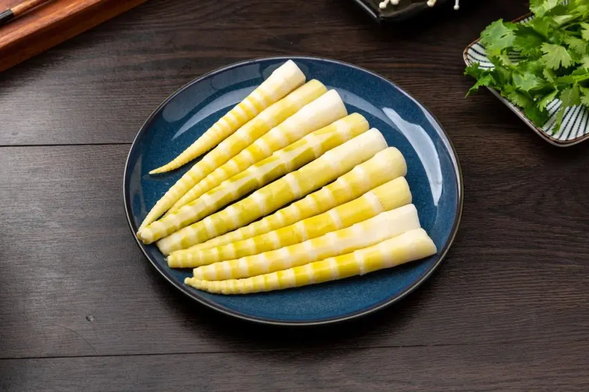
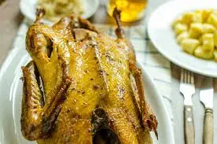
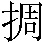
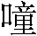
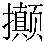
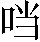
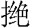

第四回 赵员外重修文殊院 鲁智深大闹五台山
正文
诗曰：
dài zhōu bì nàn wù chán 《代州避难悟禅》 míng shī nài ān ——明·施耐庵 duǒ nán táo zāi rù dài zhōu ， ēn rén xiāng yù xǐ xiāng chóu 。 躲难逃灾入代州，恩人相遇喜相酬。 zhǐ yīn fǎ wǎng chóng chóng bù ， qiě xiàng kōng mén hǎo hǎo xiū 。 只因法网1重重布，且向空门2好好修。 dǎ zuò cān chán qiú jiě tuō ， cū chá dàn fàn dù chūn qiū 。 打坐3参禅4求解脱，粗茶淡饭度春秋。 tā nián zhèng guǒ chén yuán mǎn ， hǎo xiàng mí tuó guó lǐ yóu 。 他年证果5尘缘6满，好向弥陀国7里游。
@ details 《代州避难悟禅》解析 @
这段文字讲述了鲁达躲避灾难来到代州，遇到恩人后，有感于法网重重的现实，决定在空门中好好修行，通过打坐参禅寻求解脱，以粗茶淡饭度过春秋，期望未来证果圆满后能前往弥陀国（佛教中西方极乐世界）。
@ enddetails 《代州避难悟禅》解析 @
话说当下鲁提辖扭过身来看时，拖扯的不是别人，却是渭州酒楼上救了的金老。那老儿直拖鲁达到僻静处，说道：”恩人，你好大胆！见今明明地张挂榜文，出一千贯赏钱捉你，你缘何8却去看榜？若不是老汉遇见时，却不被做公9的拿了。榜上见写着你年甲貌相贯址。”鲁达道：”洒家不瞒你说，因为你上10，就那日回到状元桥下，正迎着郑屠那厮，被洒家三拳打死了。因此上11在逃，一到处撞了四五十日，不想来到这里。你缘何不回东京去，也来到这里？”金老道：”恩人在上，自从得恩人救了，老汉寻得一辆车子，本欲要回东京去，又怕这厮赶来，亦无恩人在彼12搭救，因此不上东京去。随路望北来，撞见一个京师古邻13，来这里做买卖，就带老汉父子两口儿到这里。亏杀14了他，就与老汉女儿做媒，结交此间15一个大财主赵员外16，养做外宅17。衣食丰足，皆出于恩人。我女儿常常对他孤老18说提辖大恩。那个员外也爱刺枪使棒，常说道：’怎地得恩人相会一面也好。’想念如何能勾得见。且请恩人到家，过几日却再商议。”
鲁提辖便和金老行不得半里，到门首19，只见老儿揭起帘子，叫道：”我儿，大恩人在此。”那女孩儿浓妆艳裹20，从里面出来，请鲁达居中坐了，插烛21也似拜了六拜22，说道：”若非恩人垂救23，怎能勾有今日！”鲁达看那女子时，另是一般丰韵24，比前不同。但见：
jiā rén fēng zī 《佳人风姿》 míng shī nài ān ——明·施耐庵 jīn chāi xié chā ， yǎn yìng wū yún ； 金钗斜插，掩映乌云； cuì xiù qiǎo cái ， qīng lóng ruì xuě 。 翠袖巧裁，轻笼瑞雪。 yīng táo kǒu qiǎn yūn wēi hóng ， chūn sǔn shǒu bàn shū nèn yù 。 樱桃口浅晕微红，春笋25手半舒嫩玉。 xiān yāo niǎo nuó ， lǜ luó qún wēi lù jīn lián ； 纤腰袅娜，绿罗裙26微露金莲27； sù tǐ qīng yíng ， hóng xiù ǎo piān yí yù tǐ 。 素体28轻盈，红绣袄偏宜玉体。 liǎn duī sān yuè jiāo huā ， méi sǎo chū chūn nèn liǔ 。 脸堆三月娇花，眉扫初春嫩柳。 xiāng jī pū sù yáo tái yuè ， cuì bìn lóng sōng chǔ xiù yún 。 香肌扑簌29瑶台30月，翠鬓31笼松32楚岫33云。

@ details 《佳人风姿》解析 @
这段文字着重对一位女子的容貌、体态和服饰进行了细腻的描绘。“金钗斜插”“翠袖巧裁” 等描述了她的装饰与穿着；“樱桃口”“春笋手”“纤腰袅娜”“素体轻盈” 等展现了她的身体特征与姿态；“脸堆三月娇花，眉扫初春嫩柳”“香肌扑簌瑶台月，翠鬓笼松楚岫云” 则用比喻的手法进一步形容了她的面容之美和气质之优雅。
@ enddetails 《佳人风姿》解析 @
那女子拜罢，便请鲁提辖道：”恩人上楼去请坐。”鲁达道：”不须34生受35，洒家便要去。”金老便道：”恩人既到这里，如何肯放教你便去。”老儿接了杆棒包裹，请到楼上坐定。老儿分付道：”我儿陪侍恩人坐一坐，我去安排来。”鲁达道：”不消多事，随分36便好。”老儿道：”提辖恩念37，杀身38难报。量些39粗食薄味，何足挂齿。”女子留住鲁达在楼上坐地40，金老下来，叫了家中新讨的小厮，分付那个丫嬛一面烧着火，老儿和这小厮上街来，买了些鲜鱼、嫩鸡、酿鹅41、肥鲊42、时新43果子之类归来。一面开酒44，收拾菜蔬45，都早摆了，搬上楼来。春台46上放下三个盏子47，三双箸48，铺下菜蔬果子下饭等物。丫嬛将银酒壶盪上酒来，子父二人轮番把盏。金老倒地便拜，鲁提辖道：”老人家，如何恁地下礼49？折杀50俺也。”金老说道：”恩人听禀，前日老汉初到这里，写个红纸牌儿，旦夕一炷香，子父两个兀自51拜哩。今日恩人亲身到此，如何不拜。”鲁达道：”却也难得你这片心。”

三人慢慢地饮酒，将及晚也，只听得楼下打将起来。鲁提辖开窗看时，只见楼下三二十人，各执白木棍棒，口里都叫：”拿将下来！”人丛里一个人骑在马上，口里大喝道：”休教走了这贼！”鲁达见不是头52，拿起凳子，从楼上打将下来。金老连忙拍手叫道：”都不要动手。”那老儿抢下楼去，直至那骑马的官人身边，说了几句言语。那官人笑将起来，便喝散了那二三十人，各自去了。
那官人下马，入到里面，老儿请下鲁提辖来。那官人扑翻身便拜道：”闻名不如见面，见面胜似闻名。义士53提辖受礼。”鲁达便问那金老道：”这官人是谁？素不相识，缘何便拜洒家？”老儿道：”这个便是我儿的官人赵员外。却才只道老汉引甚么郎君54子弟在楼上吃酒，因此引庄客来厮打。老汉说知，方才喝散了。”鲁达道：”原来如此，怪员外不得。”赵员外再请鲁提辖上楼坐定，金老重整杯盘，再备酒食相待。赵员外让鲁达上首55坐地，鲁达道：”洒家怎敢。”员外道：”聊表小弟相敬之礼。多闻提辖如此豪杰，今日天赐相见，实为万幸。”鲁达道：”洒家是个粗卤56汉子，又犯了该死的罪过，若蒙员外不弃贫贱，结为相识，但有用洒家处，便与你去。”赵员外大喜，动问57打死郑屠一事，说些闲话，较量些枪法，吃了半夜酒，各自歇了。
次日天明，赵员外道：”此处恐不稳便58，可请提辖到敝庄住几时。”鲁达问道：”贵庄在何处？”员外道：”离此间15十里多路，地名七宝村便是。”鲁达道：”最好。”员外先使人去庄上，叫牵两匹马来。未及晌午59，马已到来，员外便请鲁提辖上马，叫庄客担了行李。鲁达相辞了金老父子二人，和赵员外上了马，两个并马行程，于路说些旧话，投七宝村来。不多时，早到庄前下马，赵员外携住鲁达的手，直至草堂上，分宾60而坐，一面叫杀羊置酒相待。晚间收拾客房安歇，次日又备酒食管待61。鲁达道：”员外错爱62，洒家如何报答。”赵员外便道：”四海之内，皆兄弟也。如何言报答之事。”
话休絮繁。鲁达自此之后，在这赵员外庄上住了五七日。忽一日，两个正在书院里闲坐说话，只见金老急急奔来庄上，径到书院里，见了赵员外并鲁提辖。见没人，便对鲁达道：”恩人，不是老汉心多，为是恩人前日老汉请在楼上吃酒，员外误听人报，引领庄客来闹了街坊63，后却散了，人都有些疑心，说开去。昨日有三四个做公的来邻舍64街坊打听得紧65，只怕要来村里缉捕恩人。倘或有些疏失，如之奈何？”鲁达道：”恁地时，洒家自去便了。”赵员外道：”若是留提辖在此，诚恐有些山高水低66，教提辖怨怅67；若不留提辖来，许多面皮68都不好看。赵某却有个道理，教提辖万无一失，足可安身避难，只怕提辖不肯。”鲁达道：”洒家是个该死的人，但得一处安身便了，做甚么不肯。”赵员外道：”若如此，最好。离此间三十馀里有座山，唤做五台山69，山上有一个文殊院70，原是文殊菩萨71道场。寺里有五七百僧人，为头智真长老，是我弟兄。我祖上曾舍钱在寺里，是本寺的施主檀越72。我曾许下剃度73一僧在寺里，已买下一道五花度牒74在此75，只不曾有个心腹之人了这条愿心76。如是提辖肯时，一应费用都是赵某备办77。委实78肯落发做和尚么？”鲁达寻思：”如今便要去时，那里投奔人？不如就了这条路罢。”便道：”既蒙员外做主，洒家情愿做了和尚，专靠员外照管。”当时说定了，连夜收拾衣服盘缠，段匹79礼物，排担80了。次日早起来，叫庄客挑了，两个取路望五台山来。辰牌81已后，早到那山下。鲁提辖看那五台山时，果然好座大山。但见：
wǔ tái shān 《五台山》 míng shī nài ān ——明·施耐庵 yún zhē fēng dǐng ， rì zhuǎn shān yāo 。 云遮峰顶，日转山腰。 cuó é fǎng fú jiē tiān guān ， zú lǜ cēn cī qīn hàn biǎo 。 嵯峨82仿佛接天关，崒嵂83参差84侵汉表85。 yán qián huā mù ， wǔ chūn fēng àn tǔ qīng xiāng ； 岩前花木，舞春风暗吐清香； dòng kǒu téng luó ， pī sù yǔ dào xuán nèn xiàn 。 洞口藤萝，披宿雨倒悬嫩线。 fēi yún pù bù ， yín hé yǐng jìn yuè guāng hán ； 飞云瀑布，银河影浸月光寒； qiào bì cāng sōng ， tiě jiǎo líng yáo lóng wěi dòng 。 峭壁苍松，铁角铃摇龙尾动。 yí shì yóu róu lán rǎn chū ， tiān shēng gōng jī cuì zhuāng chéng 。 宜是86由揉蓝87染出，天生工积翠88妆成。 gēn pán zhí yā sān qiān zhàng ， qì shì píng tūn sì bǎi zhōu 。 根盘直压三千丈，气势平吞四百州。
赵员外与鲁提辖两乘轿子抬上山来，一面使庄客前去通报。到得寺前，早有寺中都寺89、监寺90出来迎接。两个下了轿子，去山门91外亭子上坐定。寺内智真长老得知，引着首座92、侍者，出山门外来迎接。赵员外和鲁达向前施礼，真长老打了问讯93，说道：”施主远出不易。”赵员外答道：”有些小事，特来上刹94相浼95。”真长老便道：”且请员外方丈吃茶。”赵员外前行，鲁达跟在背后。看那文殊寺，果然是好座大刹。但见：
wén shū sì dà shā 《文殊寺大刹》 míng shī nài ān ——明·施耐庵 shān mén qīn jùn lǐng ， fó diàn jiē qīng yún 。 山门侵峻岭，佛殿接青云。 zhōng lóu yǔ yuè kū xiāng lián ， jīng gé gòng fēng luán duì lì 。 钟楼与月窟96相连，经阁共峰峦对立。 xiāng jī chú tōng yī hóng quán shuǐ ， zhòng sēng liáo nà sì miàn yān xiá 。 香积厨97通一泓98泉水，众僧寮99纳四面烟霞。 lǎo sēng fāng zhàng dòu niú biān ， chán kè jīng táng yún wù lǐ 。 老僧方丈斗牛100边，禅客101经堂102云雾里。 bái miàn yuán shí shí xiàn guǒ ， jiāng guài shí qiāo xiǎng mù yú ； 白面猿103时时献果，将怪石敲响木鱼104； huáng bān lù rì rì xián huā ， xiàng bǎo diàn gòng yǎng jīn fú 。 黄斑鹿日日衔花，向宝殿供养金佛。 qī céng bǎo tǎ jiē dān xiāo ， qiān gǔ shèng sēng lái dà shā 。 七层宝塔接丹霄105，千古圣僧来大刹。
当时真长老请赵员外并鲁达到方丈106。长老邀员外向客席而坐，鲁达便去下首坐在禅椅107上。员外叫鲁达附耳低言：”你来这里出家，如何便对长老坐地？”鲁达道：”洒家不省得108。”起身立在员外肩下。面前首座、维那109、侍者、监寺、都寺、知客110、书记111，依次排立东西两班。庄客把轿子安顿了，一齐搬将盒子入方丈来，摆在面前。长老道：”何故又将礼物来？寺中多有相渎112檀越72处。”赵员外道：”些小113薄礼，何足称谢。”道人114、行童115收拾去了。赵员外起身道：”一事启堂头大和尚116：赵某旧有一条愿心，许剃一僧在上刹，度牒词簿117都已有了，到今不曾剃得。今有这个表弟，姓鲁名达，军汉118出身，因见尘世艰辛，情愿弃俗出家。万望长老收录，慈悲慈悲，看赵某薄面，披剃为僧。一应所用，小子自当准备，烦望长老玉成119，幸甚120！”长老见说，答道：”这个事缘121，是光辉老僧山门，容易容易。且请拜茶。”只见行童托出茶来。怎见得那盏茶的好处？有诗为证：
sēng jiā xiān chá 《僧家仙茶》 míng shī nài ān ——明·施耐庵 yù ruǐ jīn yá zhēn jué pǐn ， sēng jiā zhì zào shèn gōng fū 。 玉蕊金芽真绝品，僧家制造甚工夫。 tù háo zhǎn nèi xiāng yún bái ， xiè yǎn tāng zhōng xì làng pù 。 兔毫盏122内香云白123，蟹眼汤124中细浪铺125。 zhàn tuì shuì mó lí zhěn xí ， zēng tiān qīng qì rù jī fū 。 战退睡魔离枕席，增添清气入肌肤。 xiān chá zì hé táo yuán zhǒng ， bù xǔ yí gēn bàng dì dū 。 仙茶自合桃源种，不许移根傍帝都。
@ details 《僧家仙茶》解析 @
诗中首先强调了茶是 “玉蕊金芽真绝品”，表明其品质上乘，接着提到 “僧家制造甚工夫”，点明了茶的出处与僧家制作有关。“兔毫盏内香云白，蟹眼汤中细浪铺” 细致地描绘了用兔毫盏泡茶时的美妙景象，如香云白和细浪铺，展现了茶的韵味和美感。“战退睡魔离枕席，增添清气入肌肤” 阐述了茶的功效，能让人提神醒脑、增添清气。最后 “仙茶自合桃源种，不许移根傍帝都” 更是赋予了茶一种超凡脱俗的气质，仿佛是来自世外桃源的仙品。
@ enddetails 《僧家仙茶》解析 @
真长老与赵员外众人茶罢，收了盏托126。真长老便唤首座、维那商议剃度这人，分付监寺、都寺安排办斋。只见首座与众僧自去商议道：”这个人不似出家的模样，一双眼恰似贼一般。”众僧道：”知客，你去邀请客人坐地，我们与长老计较。”知客出来请赵员外、鲁达到客馆里坐地。首座、众僧禀长老说道：”却才这个要出家的人，形容丑恶，貌相凶顽127，不可剃度他，恐久后累及山门。”长老道：”他是赵员外檀越的兄弟，如何别得128他的面皮。你等众人且休疑心，待我看一看。”焚起一炷信香129，长老上禅椅盘膝而坐，口诵咒语，入定130去了。一炷香过，却好回来，对众僧说道：”只顾剃度他。此人上应天星，心地刚直。虽然时下凶顽，命中驳杂131，久后却得清净，正果132非凡，汝等皆不及他。可记吾言，勿得推阻。”首座道：”长老只是护短133，我等只得从他。不谏不是，谏他不从便了。”
长老叫备斋食，请赵员外等方丈会斋134。斋罢，监寺打了单帐135，赵员外取出银两，教人买办物料，一面在寺里做僧鞋、僧衣、僧帽、袈裟、拜具136。一两日都已完备。长老选了吉日良时，教鸣鸿钟137，击动法鼓138，就法堂139内会集大众。整整齐齐五六百僧人，尽披袈裟，都到法座140下合掌作礼，分作两班。赵员外取出银锭、表礼141、信香，向法座前礼拜了，表白宣疏142已罢，行童引鲁达到法座下。维那教鲁达除了巾帻143，把头发分做九路绾144了，揲起来。净发人145先把一周遭都剃了，却待剃髭须，鲁达道：”留了这些儿还洒家也好。”众僧忍笑不住。真长老在法座上道：”大众听偈146。”念道：
长老念罢偈言149，喝一声：”咄，尽皆剃去！”净发人只一刀，尽皆剃了。首座呈将度牒上法座前，请长老赐法名。长老拿着空头度牒而说偈150曰：
“灵光一点，价值千金。佛法广大，赐名智深。”
长老赐名已罢，把度牒转将下来。书记僧151填写了度牒，付与鲁智深收受。长老又赐法衣袈裟，教智深穿了。监寺引上法座前，长老用手与他摩顶受记152道：”一要归依三宝153，二要归奉佛法154，三要归敬师友：此是三归。五戒者：一不要杀生，二不要偷盗，三不要邪淫，四不要贪酒，五不要妄语。”智深不晓得禅宗答应”是”“否”两字，却便道：”洒家记得。”众僧都笑。受记155已罢，赵员外请众僧到云堂里坐下，焚香设斋供献156。大小职事157僧人，各有上贺礼物。都寺引鲁智深参拜了众师兄师弟，又引去僧堂背后丛林里选佛场158坐地。当夜无事。
次日，赵员外要回，告辞。长老留连159不住，早斋160已罢，并众僧都送出山门。赵员外合掌道：”长老在上，众师父在此，凡事慈悲。小弟智深乃是愚卤161直人162，早晚礼数163不到，言语冒渎164，误犯清规165，万望觑赵某薄面，恕免166恕免。”长老道：”员外放心，老僧自慢慢地教他念经诵咒，办道167参禅。”员外道：”日后自得报答。”人丛里唤智深到松树下，低低分付道：”贤弟，你从今日难比往常，凡事自宜省戒168，切不可托大169。倘有不然170，难以相见，保重保重。早晚衣服，我自使人送来。”智深道：”不索171哥哥说，洒家都依了。”当时赵员外相辞长老，再别了众人上轿，引了庄客，拕了一乘空轿，取了盒子，下山回家去了。当下长老自引了众僧回寺。
话说鲁智深回到丛林选佛场中禅床172上，扑倒头173便睡。上下肩174两个禅和子175推他起来，说道：”使不得，既要出家，如何不学坐禅176？”智深道：”洒家自睡，干你甚事？”禅和子道：”善哉！”智深裸袖177道：”团鱼178洒家也吃，甚么善哉179！”禅和子道：”却是苦也。”智深便道：”团鱼大腹，又肥甜了，好吃，那得苦也？”上下肩禅和子都不采他，由他自睡了。次日，要去对长老说知智深如此无礼，首座劝道：”长老说道，他后来正果非凡，我等皆不及他，只是护短。你们且没奈何，休与他一般见识。”禅和子自去了。智深见没人说他，到晚放翻180身体，横罗181十字182，倒在禅床上睡。夜间鼻如雷响，如要起来净手183，大惊小怪，只在佛殿后撒尿撒屎，遍地都是。侍者禀长老说：”智深好生无礼，全没些个184出家人体面。丛林中如何安着得185此等之人。”长老喝道：”胡说！且看檀越之面，后来必改。”自此无人敢说。
鲁智深在五台山寺中，不觉搅了四五个月。时遇初冬天气，智深久静思动。当日晴明得好，智深穿了皂布186直裰187，系了鸦青绦，换了僧鞋，大踏步走出山门来。信步188行到半山亭子上，坐在鹅项懒凳189上，寻思道：”干鸟么190！俺往常好酒好肉每日不离口，如今教洒家做了和尚，饿得干瘪191了。赵员外这几日又不使人送些东西来与洒家吃，口中淡出鸟来，这早晚怎地得些酒来吃也好。”正想酒哩，只见远远地一个汉子，挑着一副担桶192，唱上山来，上面盖着桶盖。那汉子手里拿着一个旋子193，唱着上来。唱道：
“九里山194前作战场，牧童拾得旧刀枪。 顺风吹动乌江195水，好似虞姬别霸王。”
鲁智深观见那汉子担担桶上来，坐在亭子上，看这汉子也来亭子上歇下担桶。智深道：”兀那196汉子，你那桶里甚么东西？”那汉子道：”好酒。”智深道：”多少钱一桶？”那汉子道：”和尚，你真个197也是作耍198？”智深道：”洒家和你耍甚么！”那汉子道：”我这酒挑上去，只卖与寺内火工199道人、直厅200轿夫、老郎201们做生活的吃。本寺长老已有法旨202，但卖与和尚们吃了，我们都被长老责罚，追了本钱，赶出屋去。我们见关203着本寺的本钱，见住着本寺的屋宇204，如何敢卖与你吃？”智深道：”真个不卖？”那汉子道：”杀了我也不卖。”智深道：”洒家也不杀你，只要问你买酒吃。”那汉子见不是头，挑了担桶便走。智深赶下亭子来，双手拿住扁担，只一脚，交当205踢着，那汉子双手掩着做一堆，蹲在地下，半日起不得。智深把那两桶酒，都提在亭子上，地下拾起旋子，开了桶盖，只顾舀冷酒吃。无移时206，两桶酒吃了一桶。智深道：”汉子，明日来寺里讨钱。”那汉子方才疼止，又怕寺里长老得知，坏了衣饭207，忍气吞声，那里敢讨钱。把酒分做两半桶挑了，拿了旋子，飞也似下山去了。
只说鲁智深在亭子上坐了半日，酒却上来；下得亭子，松树根边又坐了半歇208，酒越涌上来。智深把皂直裰褪209膊下来，把两只袖子缠在腰里，露出脊背上花绣210来，扇着两个膀子上山来。看时，但见：
头重脚轻，对明月眼红面赤；前合后仰，趁清风东倒西歪。踉踉跄跄上山来，似当风之鹤；摆摆摇摇回寺去，如出水之龟。脚尖曾踢涧中龙，拳头要打山下虎。指定天宫，叫骂天蓬元帅；踏开地府，要拿催命判官。裸形赤体醉魔君，放火杀人花和尚。
鲁智深看看来到山门下，两个门子远远地望见，拿着竹篦211212来到山门下，拦住鲁智深便喝道：”你是佛家弟子，如何213得烂醉了上山来。你须214不瞎，也见库局215里贴的晓示216：但凡和尚破戒吃酒，决打四十竹篦217，赶出寺去；如门子218纵容醉的僧人入寺，也吃十下。你快下山去，饶你几下竹篦。”鲁智深一者初做和尚，二来旧性未改，睁起双眼骂道：”直娘贼！你两个要打洒家，俺便和你厮打！”门子见势头不好，一个飞也似入来报监寺，一个虚拖竹篦拦他。智深用手隔过，叉开五指，去那门子脸上只一掌，打得踉踉跄跄。却待挣侧219，智深再复一拳，打倒在山门下，只是叫苦。智深道：”洒家饶你这厮。”踉踉跄跄入寺里来。
监寺听得门子报说，叫起老郎、火工、直厅轿夫三二十人，各执白木棍棒，从西廊下抢出来，却好迎着智深。智深望见，大吼了一声，却似嘴边起个霹雳，大踏步抢入来。众人初时不知他是军官出身，次后见他行得凶了，慌忙都退入藏殿220里去，便把亮槅221关上。智深抢入阶来，一拳一脚，打开亮槅，三二十人都赶得没路。夺条棒，从藏殿里打将出来。
监寺慌忙报知长老。长老听得，急引了三五个侍者，直来廊下，喝道：”智深不得无礼！”智深虽然酒醉，却认得是长老，撇了棒，向前来打个问讯222，指着廊下，对长老道：”智深吃了两碗酒，又不曾撩拨223他们，他众人又引人来打洒家。”长老道：”你看我面，快去睡了，明日却说。”鲁智深道：”俺不看长老面，洒家直224打死你那几个秃驴。”长老叫侍者扶智深到禅床上，扑地225便倒了，齁齁226地睡了。众多职事僧人围定长老，告诉道：”向日227徒弟们曾谏长老来，今日如何？本寺那里容得这等野猫，乱了清规。”长老道：”虽是如今眼下有些啰唣228，后来却成得正果。无奈何，且看赵员外檀越之面，容恕他这一番。我自明日叫去埋冤229他便了。”众僧冷笑道：”好个没分晓230的长老！”各自散去歇息。
次日早斋罢，长老使侍者到僧堂231里坐禅处唤智深时，尚兀自未起。待他起来，穿了直裰，赤着脚，一道烟走出僧堂来。侍者吃了一惊，赶出外来寻时，却走在佛殿后撒屎232。侍者忍笑不住，等他净了手，说道：”长老请你说话。”智深跟着侍者到方丈，长老道：”智深，虽是个武夫出身，今来233赵员外檀越剃度了你，我与你摩顶受记，教你一不可杀生，二不可偷盗，三不可邪淫，四不可贪酒，五不可妄语。此五戒，乃僧家常理。出家人第一不可贪酒，你如何夜来234吃得大醉，打了门子，伤坏了藏殿上朱红槅子，又把火工道人都打走了，口出喊声。如何这般所为？”智深跪下道：”今番235不敢了。”长老道：”既然出家，如何先破了酒戒，又乱了清规？我不看你施主赵员外面，定赶你出寺。再后休犯。”智深起来合掌道：”不敢，不敢。”长老留在方丈里，安排早饭与他吃，又用好言语劝他。取一领细布直裰，一双僧鞋，与了智深，教回僧堂去了。
昔大唐一个名贤，姓张名旭，作一篇《醉歌行》，单说那酒。端的做得好，道是：
zuì gē xíng 《醉歌行》 táng zhāng xù ——唐·张旭236 jīn ōu liàn yàn qīng huān bó ， shuāng shǒu qíng lái liǎng móu bái 。 金瓯237潋滟238倾欢伯239，双手擎来两眸白。 yán jǐng zhǎng shū shì yù hóng ， yàn tūn yóu hèn jiāng hú zhǎi 。 延颈240长舒似玉虹241，咽吞犹恨江湖窄。 xī nián shì yàn yù huáng qián ， dí yǐn dōu wú liǎng sān kè 。 昔年侍宴玉皇前，敌饮242都无两三客。 pán táo làn shú duī shān hú ， qióng yè nóng zhēn fú hǔ pò 。 蟠桃烂熟堆珊瑚，琼液243浓斟浮琥珀。 liú xiá chàng yǐn shù bǎi bēi ， jī fū rùn zé sāi wēi chì 。 流霞244畅饮数百杯，肌肤润泽腮微赤。 tiān dì wén zhī jiǔ liàng hóng ， chì lìng shòu cì sān qiān shí 。 天地闻知酒量洪，敕令245受赐三千石。 fēi xiān quàn wǒ bù jì shù ， mǐng dǐng shén qīng shuǎng jīn gǔ 。 飞仙246劝我不记数，酩酊247神清爽筋骨。 dōng jūn mìng wǒ fù xīn shī ， xiào zhǐ sān shān yǒng biāo gé 。 东君248命我赋新诗，笑指三山249咏标格250。 xìn bǐ huī chéng wǔ bǎi yán ， bù jué zūn qián duò jīn zé 。 信笔251挥成五百言，不觉尊252前堕巾帻143。 yàn bà hūn mí bù jì guī ， chéng luán wù rù yún guāng zhái 。 宴罢昏迷不记归，乘鸾误入云光宅253。 xiān tóng fú xià zǐ yún lái ， bù biàn dōng xī yǔ nán běi 。 仙童扶下紫云来，不辨东西与南北。 yī yǐn qiān zhōng bǎi shǒu shī ， cǎo shū luàn sàn zòng héng huà 。 一饮千锺百首诗，草书乱散纵横划。
@ details 《醉歌行》解析 @
译文：
金杯里美酒荡漾，我尽情畅饮。双手举起酒杯，两眼发直。伸长脖子像玉色的彩虹，吞咽之时仍恨这喉咙似江湖般狭窄不能尽情畅饮。想当年在玉皇大帝面前侍宴，一起喝酒的没有两三个能和我匹敌的客人。蟠桃熟透堆积如珊瑚，美酒斟满如琥珀般晶莹。痛饮流霞酒数百杯，肌肤润泽双颊微红。天地都知道我的酒量宏大，下旨赏赐我美酒三千石。飞仙劝我喝酒不要记数，喝得酩酊大醉却神清气爽、筋骨舒畅。东君命我赋新诗，笑着指向三山吟咏其高格风范。信笔挥就五百字的诗篇，不知不觉在酒樽前头巾都掉落了。宴会结束后昏沉迷糊不记得回家，乘鸾鸟却误入了云光仙宅。仙童扶着我从紫色云彩上下来，我已不辨东西南北。一饮千钟就能作出百首诗，草书也胡乱写就，杂乱地纵横挥洒。
赏析：
这首《醉歌行》生动地展现了诗人张旭豪放不羁、纵情酒色与诗墨的形象。
从内容上看，诗开篇就描绘了诗人豪饮的场景，“金瓯潋滟倾欢伯，双手擎来两眸白”，以夸张的手法表现出诗人对酒的热爱和饮酒时的豪迈之态。接着回忆往昔在玉皇前侍宴，突出自己酒量无敌，“昔年侍宴玉皇前，敌饮都无两三客”。然后描写美酒如蟠桃、琼液、流霞，进一步渲染饮酒之乐，“蟠桃烂熟堆珊瑚，琼液浓斟浮琥珀。流霞畅饮数百杯，肌肤润泽腮微赤”。
在饮酒过程中，诗人得到天地赏赐、飞仙劝酒，又奉东君之命赋新诗，展现出诗人在仙界般的奇幻境遇中依然才情四溢，“天地闻知酒量洪，敕令受赐三千石。飞仙劝我不记数，酩酊神清爽筋骨。东君命我赋新诗，笑指三山咏标格”。信笔挥就五百言诗篇，甚至头巾掉落也浑然不觉，“信笔挥成五百言，不觉尊前堕巾帻”。宴罢后的迷糊状态以及误入仙宅，被仙童扶下等情节，增添了诗歌的奇幻色彩和浪漫氛围。
最后“一饮千锺百首诗，草书乱散纵横划”，既强调了诗人的酒量与诗才，又暗示了其草书创作与饮酒、诗意的紧密联系，体现了张旭作为“草圣”的豪放不羁与才情奔放。
从艺术特色上看，诗歌充满了夸张、想象和奇幻的元素。如“双手擎来两眸白”“咽吞犹恨江湖窄”“敕令受赐三千石”等夸张的描写，生动地展现了诗人的豪情壮志和对酒的极度热爱。同时，诗中对仙界的想象，如侍宴玉皇前、飞仙劝酒、东君命赋新诗等情节，使诗歌充满了浪漫主义色彩和奇幻氛围。此外，诗歌语言流畅自然，富有节奏感，如“金瓯潋滟倾欢伯，双手擎来两眸白。延颈长舒似玉虹，咽吞犹恨江湖窄”，读来朗朗上口，增强了诗歌的艺术感染力。
@ enddetails 《醉歌行》解析 @
但凡饮酒，不可尽欢。常言酒能成事，酒能败事，便是小胆的吃了，也胡乱做了大胆，何况性高254的人。
再说这鲁智深自从吃酒醉闹了这一场，一连三四个月不敢出寺门去。忽一日，天色暴热，是二月间天气。离了僧房，信步188踱出山门外立地255，看着五台山，喝采一回。猛听得山下叮叮的响声，顺风吹上山来。智深再回僧堂里，取了些银两，揣在怀里，一步步走下山来。出得那”五台福地”的牌楼来看时，原来却是一个市井256，约有五七百人家。智深看那市镇上时，也有卖肉的，也有卖菜的，也有酒店、面店。智深寻思道：”干呆么257！俺早知有这个去处，不夺他那桶酒吃，也自下来买些吃。这几日熬得清水流258，且过去看有甚东西买些吃。”听得那响处，却是打铁的在那里打铁。间壁一家门上，写着”父子客店”。
智深走到铁匠铺门前看时，见三个人打铁。智深便道：”兀那待诏259，有好钢铁么？”那打铁的看见鲁智深腮边新剃暴长短须，戗戗地260好渗濑261262人，先有五分怕他。那待诏住了手道：”师父请坐，要打甚么生活263？”智深道：”洒家要打条禅杖264，一口戒刀265，不知有上等好铁么？”待诏道：”小人这里正有些好铁，不知师父要打多少重的禅杖？戒刀但凭分付。”智深道：”洒家只要打一条一百斤重的。”待诏笑道：”重了，师父。小人打怕不打了266，只恐师父如何使得动。便是关王刀，也则只有八十一斤重。”智深焦躁道：”俺便不及关王？他也只是个人。”待诏道：”小人好心，只可打条四五十斤的，也十分重了。”智深道：”便依你说，比关王刀，也打八十一斤的。”待诏道：”师父，肥了不好看，又不中使。依着小人，好生267打一条六十二斤的水磨268禅杖与师父，使不动时，休怪小人。戒刀已说了，不用分付，小人自用十分好铁打造在此。”智深道：”两件家生269要几两银子？”待诏道：”不讨价270，实要271五两银子。”智深道：”俺便依你五两银子，你若打得好时，再有赏你。”那待诏接了银两道：”小人便打在此。”智深道：”俺有些碎银子在这里，和你买碗酒吃。”待诏道：”师父稳便58。小人赶趁272些生活，不及相陪。”
智深离了铁匠人家，行不到三二十步，见一个酒望子273挑出在房檐上。智深掀起帘子，入到里面坐下，敲那桌子叫道：”将酒来！”卖酒的主人家说道：”师父少罪274，小人住的房屋也是寺里的，本钱也是寺里的，长老已有法旨，但是小人们卖酒与寺里僧人吃了，便要追了小人们本钱，又赶出屋。因此只得休怪。”智深道：”胡乱卖些与洒家吃，俺须不说是你家便了。”店主人道：”胡乱不得，师父别处去吃，休怪休怪。”智深只得起身，便道：”洒家别处吃得，却来和你说话。”出得店门，行了几步，又望见一家酒旗儿直挑出在门前。智深一直走进去，坐下叫道：”主人家，快把酒来卖与俺吃。”店主人道：”师父，你好不晓事。长老已有法旨，你须也知，却来坏我们衣饭207。”智深不肯动身，三回五次275，那里肯卖。智深情知不肯，起身又走，连走了三五家，都不肯卖。智深寻思一计：”若不生个道理，如何能勾酒276吃。”远远地杏花深处，市梢277尽头，一家挑出个草帚儿278来。智深走到那里看时，却是个傍村小酒店。但见：
cūn biān jiǔ sì 《村边酒肆》 míng shī nài ān ——明·施耐庵 bàng cūn jiǔ sì yǐ duō nián ， xié chā sāng má gǔ dào biān 。 傍村酒肆已多年，斜插桑麻279古道边。 bái bǎn dèng pù bīn kè zuò ， ǎi lí bā yòng jí jīng biān 。 白板凳铺宾客坐，矮篱笆用棘荆280编。 pò wèng zhà chéng huáng mǐ jiǔ ， chái mén tiāo chū bù qīng lián 。 破瓮榨成黄米酒281，柴门282挑出布青帘。 gèng yǒu yì bān kān xiào chù ， niú shǐ ní qiáng huà jiǔ xiān 。 更有一般堪笑处，牛屎泥墙画酒仙。
鲁智深揭起帘子，走入村店里来，倚着小窗坐下，便叫道：”主人家，过往僧人买碗酒吃！”庄家看了一看道：”和尚，你那里来？”智深道：”俺是行脚283僧人，游方284到此经过，要买碗酒吃。”庄家道：”和尚若是五台山寺里的师父，我却不敢卖与你吃。”智深道：”洒家不是。你快将酒卖来。”庄家看见鲁智深这般模样，声音各别285，便道：”你要打多少酒？”智深道：”休问多少，大碗只顾筛286来。”约莫也吃了十来碗酒，智深问道：”有甚肉，把一盘来吃。”庄家道：”早来有些牛肉，都卖没了，只有些菜蔬在此。”智深猛闻得一阵肉香，走出空地上看时，只见墙边沙锅287里煮着一只狗在那里。智深便道：”你家见有狗肉，如何不卖与俺吃？”庄家道：”我怕你是出家人不吃狗肉，因此不来问你。”智深道：”洒家的银子有在这里。”就将银子递与庄家道：”你且卖半只与俺吃。”那庄家连忙取半只熟狗肉，捣些蒜泥，将来放在智深面前。智深大喜，用手扯那狗肉，蘸着蒜泥吃，一连又吃了十来碗酒。吃得口滑288，只顾要吃，那里肯住。庄家倒都呆了，叫道：”和尚只恁地289罢！”智深睁起眼道：”洒家又不白吃你的，管俺怎地！”庄家道：”再要多少？”智深道：”再打一桶来。”庄家只得又舀一桶来。智深无移时206又吃了这桶酒，剩下一脚狗腿，把来揣在怀里。临出门又道：”多的银子，明日又来吃。”吓得庄家目睁口呆，罔知所措290，看见他早望五台山上去了。
智深走到半山亭子上，坐了一回，酒却涌上来，跳起身，口里道：”俺好些时不曾拽拳使脚，觉道291身体都困倦了，洒家且使几路看。”下得亭子，把两只袖子掿292在手里，上下左右使了一回。使得力发，只一膀子搧293在亭子柱上，只听得刮剌剌294一声响亮，把亭子柱打折了，坍295了亭子半边。门子听得半山里响，高处看时，只见鲁智深一步一，抢上山来。两个门子叫道：”苦也！前日这畜生醉了，今番又醉得不小可296！”便把山门关上，把拴297拴了，只在门缝里张298时，见智深抢到山门下，见关了门，把拳头擂鼓也似敲门，两个门子那里敢开。智深敲了一回，扭过身来，看了左边的金刚，喝一声道：”你这个鸟大汉，不替俺敲门，却拿着拳头吓洒家，俺须不怕你。”跳上台基，把栅剌子299只一拔，却似300葱般拔开了。拿起一根折木头301，去那金刚腿上便打，簌簌302的泥和颜色都脱下来。门子张见道：”苦也！”只得报知长老。智深等了一回，调转身来看着右边金刚，喝一声道：”你这厮张开大口，也来笑洒家。”便跳过右边台基上，把那金刚脚上打了两下，只听得一声震天价响，那尊金刚从台基上倒撞下来。智深提着折木头大笑。
两个门子去报长老，长老道：”休要惹他，你们自去。”只见这首座、监寺、都寺，并一应职事僧人，都到方丈禀说：”这野猫今日醉得不好，把半山亭子、山门下金刚都打坏了，如何是好？”长老道：”自古天子尚且避醉汉，何况老僧乎？若是打坏了金刚，请他的施主赵员外自来塑新的；倒了亭子，也要他修盖。这个且由他。”众僧道：”金刚乃是山门之主，如何把来303换过？”长老道：”休说坏了金刚，便是打坏了殿上三世佛304，也没奈何，只可回避他。你们见前日的行凶么？”众僧出得方丈，都道：”好个囫囵粥305的长老！门子，你且休开门，只在里面听。”智深在外面大叫道：”直娘306的秃驴们！不放洒家入寺时，山门外讨把火来，烧了这个鸟寺。”众僧听得叫，只得叫门子：”拽307了大拴，由那畜生入来。若不开时，真个做出来！”门子只得捻脚捻手308，把拴拽了，飞也似闪入房里躲了。众僧也各自回避。
只说那鲁智深双手把山门尽力一推，扑地将入来，吃309了一跤。扒将起来，把头摸一摸，直奔僧堂来。到得选佛场中，禅和子正打坐间，看见智深揭起帘子，钻将入来，都吃一惊，尽低了头。智深到得禅床边，喉咙里咯咯地响，看着地下便吐。众僧都闻不得那臭，个个道：”善哉！”齐掩了口鼻。智深吐了一回，扒上禅床，解下绦，把直裰带子都必必剥剥310扯断了，脱下那脚狗腿来。智深道：”好，好！正肚饥哩。”扯来便吃。众僧看见，便把袖子遮了脸，上下肩两个禅和子远远地躲开。智深见他躲开，便扯一块狗肉，看着上首的道：”你也到口311。”上首的那和尚把两只袖子死掩了脸，智深道：”你不吃？”把肉望下首的禅和子嘴边塞将去。那和尚躲不迭，却待下禅床，智深把他劈耳朵揪住，将肉便塞。对床四五个禅和子跳过来劝时，智深撇了狗肉，提起拳头，去那光脑袋上必必剥剥只顾凿。满堂僧众大喊起来，都去柜中取了衣钵312要走。此乱唤做”卷堂大散313“，首座那里禁约得住。
智深一味地打将出来，大半禅客101都躲出廊下来。监寺、都寺不与长老说知314，叫起一班职事僧人，点起老郎、火工道人、直厅轿夫，约有一二百人，都执杖叉棍棒，尽使手巾315盘头，一齐打入僧堂来。智深见了，大吼一声，别无器械，抢入僧堂里佛面前，推翻供桌，两条桌脚，从堂里打将出来。但见：
心头火起，口角雷鸣。奋八九尺猛兽身躯，吐三千丈凌云志气。按不住杀人怪胆，圆睁起卷海316双睛。直截横冲，似中箭投崖虎豹；前奔后涌，如着枪跳涧豺狼。直饶317揭帝318也难当，便是金刚须拱手。恰似顿断319绒绦320锦鹞子321，犹如扯开铁锁火猢狲322。
当时鲁智深轮两条桌脚，打将出来。众多僧行见他来得凶了，都拖了棒，退到廊下。智深两条桌脚着地卷将来，众僧早两下合拢来。智深大怒，指东打西，指南打北，只饶了两头的。当时智深直打到法堂下，只见长老喝道：”智深不得无礼！众僧也休动手。”两边众人被打伤了十数个，见长老来，各自退去。智深见众人退散，撇了桌脚，叫道：”长老与洒家做主。”此时酒已七八分醒了。长老道：”智深，你连累杀323老僧。前番醉了一次，搅扰了一场，我教你兄赵员外得知，他写书324来与众僧陪话325。今番你又如此大醉无礼，乱了清规，打坍了亭子，又打坏了金刚，这个且由他。你搅得众僧卷堂326而走，这个罪业327非小。我这里五台山文殊菩萨道场，千百年清净香火去处，如何容得你这等秽污328。你且随我来方丈里过几日，我安排你一个去处。”智深随长老到方丈去。长老一面叫职事僧人留住众禅客，再回僧堂，自去坐禅；打伤了的和尚，自去将息。长老领智深到方丈歇了一夜。
次日，真长老与首座商议，收拾了些银两赍发329他，教他别处去，可先说与赵员外知道。长老随即修书一封，使两个直厅200道人径到赵员外庄上说知就里330，立等回报。赵员外看了来书，好生267不然331，回书来拜复长老，说道：”坏了的金刚、亭子，赵某随即备价332来修。智深任从长老发遣。”长老得了回书，便叫侍者取领皂布直裰，一双僧鞋，十两白银，房中唤过智深。长老道：”智深，你前番333一次大醉，闹了僧堂，便是误犯334。今次335又大醉，打坏了金刚，坍了亭子，卷堂闹了选佛场，你这罪业非轻。又把众禅客打伤了。我这里出家是个清净去处，你这等做，甚是不好。看你赵檀越面皮，与你这封书，投一个去处安身336，我这里决然337安你不得了。我夜来234看了，赠汝四句偈言149，终身受用。”智深道：”师父教弟子那里去安身立命？愿听俺师四句偈言。”
真长老指着鲁智深，说出这几句言语，去这个去处。有分教：这人笑挥禅杖，战天下英雄好汉；怒掣338戒刀，砍世上逆子谗臣。直教名驰塞北三千里，证果5江南第一州。毕竟真长老与智深说出甚言语来，且听下回分解。
读后感
《读〈第四回 赵员外重修文殊院 鲁智深大闹五台山〉有感》
读完这一回，感觉故事很有意思，也让我对鲁智深这个人物有了新的认识。
鲁达本来在看捉拿自己的榜文，结果被金老给生拉硬拽开去。看到金老父女有了好的归宿——赵员外，他也为他们高兴。鲁达和赵员外能一见如故，这也说明鲁达是个很直率、容易让人亲近的人。
不过鲁达当和尚这一段可太让人哭笑不得了。他一开始也是没办法才答应去五台山当和尚，可他实在不是个能静下心来修行的人。一开始喝醉闹事，打了门子，弄坏了藏殿的东西，长老看在赵员外的面子上原谅了他。后来他又跑下山去喝酒，这下闹得更厉害了，把亭子打坍，金刚打坏，还让众僧都没办法待下去。感觉他就像一个管不住自己的孩子，心里想做什么就做什么，完全不顾寺庙的规矩。
从这一回也能看出来，鲁智深的性格太莽撞、太随性了。他的这些行为肯定会给他自己和别人都带来麻烦。长老最后下逐客令也是没办法的事，毕竟他闹得实在太过分了。这一回让我很期待鲁智深接下来又会去哪里，又会闯出什么样的祸来呢。
脚注
解释下面的脚注：
-
法网: 【fǎ wǎng】 法网 [the net of justice]比喻严密的法律制度 难逃法网 ↩
-
空门: 【kōng mén】 空门 [Buddhism] 佛教教义认为世界一切都是空的,因指佛教 莫向空门悲物理,吾世从来多沧桑 ↩
-
打坐: 【dǎ zuò】 打坐 [sit in meditation] 原指僧道盘腿闭目而坐,使心入定。现也指闭目凝神而坐 ↩
-
参禅: 【cān chán】 参禅 [(Buddhist) meditate] 佛教指静坐冥想,领悟佛理 参禅悟道 ↩
-
证果: 【zhèng guǒ】1.佛教语。谓佛教徒经过长期修行而悟入妙道。 2.泛指修行得道。 3.比喻事情最后取得成就。 ↩ ↩2
-
尘缘: 【chén yuán】佛教、道教谓与尘世的因缘。 ↩
-
弥陀国: (AI) mí tuó guó。对弥陀佛所在国度的称呼，在文中可能指西方极乐世界。 ↩
-
缘何: 【yuán hé】因何；为何。 ↩
-
做公: (AI) zuò gōng。旧指衙门里的差役。 ↩
-
你上: (AI) nǐ shàng。这里可理解为“因为你（的缘故）”。 ↩
-
此上: (AI) cǐ shàng。在这段文字中，可解释为“因为这个缘故”。 ↩
-
在彼: (AI) zài bǐ。在那里。 ↩
-
古邻——老邻居。 ↩
-
亏杀: 【kuī shā】1.犹多亏﹐幸亏。 2.犹难为。 ↩
-
员外: 【yuán wài】 员外 (1) [ministry councillor]∶古指正员以外官员(全称为“员外郎”) (2) [landlord]∶指地主豪绅(多见于早期白话) 结交此间一个大财主赵员外,养做外宅。——《水浒传》 ↩
-
外宅: 【wài zhái】 1. 城外住宅；别宅。 😄 2. 指男子养于别宅而与之同居之妇。 ↩
-
孤老——娼妓对长期固定的客人、非正式夫妻关系中的妇女对所结识的男人，称孤老。帮闲等辈有时也称他所倚靠接济的人做孤老（如后文第二十一回唐牛儿称宋江）。孤老的意思略近于官人之类。 ↩
-
门首: 【mén shǒu】1.门口;门前。 ↩
-
浓妆艳裹: 【nóng zhuāng yàn guǒ】妆饰华丽。 亦作：浓妆艳服 ↩
-
插烛: 【chā zhú】形容跪拜时连续磕头的动作。 ↩
-
六拜: (AI) liù bài。行六次拜礼。 ↩
-
垂救: 【chuí jiù】 发善心; 伸出援手。出处：”《水浒传》第四回：“若非恩人垂救，怎能够有今日！ ↩
-
丰韵: 【fēng yùn】 丰韵 [charm] 迷人的肉体特征;优美的姿态——多用于女子 丰韵犹存 ↩
-
春笋: 【chūn sǔn】 春笋 [bamboo shoots in spring] 春季长成或挖出的各种竹笋 ↩
-
罗裙: 【luó qún】丝罗制的裙子。多泛指妇女衣裙。 ↩
-
金莲: 【jīn lián】 金莲 [bound feet of a woman] 旧指缠足妇女的小脚 三寸金莲 ↩
-
素体: 【sù tǐ】本体。 ↩
-
扑簌: 【pū sù】亦作“扑速”。 物体轻落貌。 象声词。多形容禽鸟拍翅声。 ↩
-
瑶台: 【yáo tái】美玉砌的楼台。亦泛指雕饰华丽的楼台。 指传说中的神仙居处。 积雪的楼台。 玉镜台。妆台的美称。 ↩
-
翠鬓: 【cuì bìn】黑而光润的鬓发。 ↩
-
笼松: 【lóng sōng】蓬松散乱的样子。 ↩
-
楚岫: 【chǔ xiù】1.楚地山峦。 2.指巫山。泛指男女欢会处。 ↩
-
不须: 【bù xū】不用；不必。 ↩
-
生受: 【shēng shòu】 生受 (1) [dilemma; embarrass]∶麻烦;难为(用于道谢) 生受不起 (2) [toil]∶受苦;辛苦 今后休辞生受 (3) [bear; accept]∶承受;受 不好意思坦然生受人家的礼 ↩
-
随分——随便、随意、照平常的样子的意思。 ↩
-
恩念: 【ēn niàn】1.犹恩情，恩德。 ↩
-
杀身: 【shā shēn】舍生；丧生。 ↩
-
量些: (AI) liáng xiē。一些、少许。 ↩
-
坐地——地，语助词，犹如说”着”。坐地，就是坐着。 ↩
-
酿鹅: 【niàng é】1.食品。即糟鹅。 ↩
-
鲊（zhǎ）——糟醃的鱼类、肉类，生烫的鱼片，都叫做鲊。一般指糟醃鱼。 ↩
-
时新: 【shí xīn】 时新 (1) [up-to-date]∶某个时期最新的 时新的式样 (2) [fresh]∶指应时的食品 献上时新,略表寸心 ↩
-
开酒: 【kāi jiǔ】1.打开酒瓮。 2.解除酒戒，开始饮酒。 ↩
-
菜蔬: 【cài shū】 菜蔬 (1) [greens]∶青菜 菜蔬果品 (2) [dishes at a meal]∶煮熟的菜肴 吃不多儿,因那菜蔬太咸了些,不喜多吃。——《西游记》 ↩
-
春台——饭桌。 ↩
-
盏子: (AI) zhǎn zi。小杯子。 ↩
-
箸: 【zhù】 [名] 1. 筷子。 [动] 1. 标举。 2. 撰述、写作。 ↩
-
下礼: 【xià lǐ】1.施礼。 2.指向女家送聘礼。 ↩
-
折杀: 【zhé shā】 折杀 [not deserve it] 指因享受过分而折福折寿(迷信),也用来表示承受不起 ↩
-
兀自: 【wù zì】 1. 径自。 😄 2. 亦作“兀子 ”。还；仍然。 ↩
-
不是头: 【bú shì tóu】情势不佳。 不对头。 ↩
-
义士: 【yì shì】 义士 (1) [high-minded man]∶具有高尚的道德原则或有节操、情操的或有武士风度的人 嗟乎义士。——《汉书·李广苏建传》 (2) [person who upholds justice]∶支持正义、维护正义的人,支持公正的人 (3) [righteous man]∶有正义感的人,行为正当的或公正的人;有操行、明辨是非的人 ↩
-
郎君: 【láng jūn】 郎君 (1) [my husband]∶妻对夫的称呼 (2) [dandy;playboy]∶对官吏、富家子弟的通称 (3) [youth]∶对年轻男子的尊称 若擒住这披发郎君回帐中去快乐,煞胜似郎主分茅裂土。——《禅真后记》 (4) [whore maker]∶称嫖客 我是普天下郎君领袖,盖世浪子班头。——元· 关汉卿《南吕一枝花》 (5) [son-in-law]∶岳父称女婿 休怪咱波女婿郎君。——元·佚名《村乐堂》 ↩
-
上首: 【shàng shǒu】 上首 (1) [right-hand seat]∶亦作“上手” (2) [seat of honour]∶位置比较尊贵的一侧 (3) [at the beginning]∶开头;开始 这场球一上手就打得很顺利 ↩
-
粗卤: 【cū lǔ】 1. 见“粗鲁”。亦作“麄鹵”。 😄 2. 粗心大意。 😄 3. 粗暴鲁莽。 ↩
-
动问: 【dòng wèn】 动问 [(a term of politeness) ask;proffer question] 〈方〉∶客套话,即请人告诉自己 素不相识,动问官人高姓大名?——《水浒传》 ↩
-
稳便: 【wěn biàn】 稳便 (1) [safe;be convenient and reliable]∶妥当;便利 在这里住得稳便 (2) [do as you wish]∶自便;任便 ↩ ↩2
-
晌午: 【shǎng wǔ】 晌午 [midday] 正午 晌午饭 ↩
-
分宾: (AI) fēn bīn。分别宾客的座次，以示尊重。 ↩
-
管待: 【guǎn dài】 管待 guǎndài [look after;wait on;serve] 照顾接待;用饭菜等招待 当时管待林冲酒食,至夜送回天王堂。——《水浒》 婆婆,若有梁山上那两个哥哥来时,好生管待他。——《古今杂剧·黑旋风》 ↩
-
错爱: 【cuò ài】 错爱 cuò’ài [undeserved kindness] 谦辞,表示感谢对方的爱护、培养 承蒙错爱 ↩
-
街坊: 【jiē fāng】 街坊 (1) [block]∶街巷,也指城市中以道路或自然界线(如河流)划分的居住生活区 街坊邻居 (2) [neighbour] [口]∶同街巷的邻居 我们是街坊 ↩
-
邻舍: 【lín shè】 邻舍 [neighbor] 〈方〉∶家住隔壁的人 ↩
-
得紧: (AI) de jǐn。非常紧、很紧迫。 ↩
-
山高水低: 【shān gāo shuǐ dī】 山高水低 shāngāo-shuǐdī [something unfortunate] 比喻意外的灾祸或不幸的事情(多指死亡) 若是留提辖在此,诚恐有些山高水低,教提辖怨怅。——《水浒传》 ↩
-
怨怅: 【yuàn chàng】埋怨。 ↩
-
面皮: 【miàn pí】 1. 脸上的皮肤。也指脸。 😄 2. 脸色。指脸上的表情。 😄 3. 面子；情面。 😄 4. 比喻假相，伪装。 😄 5. 指羞耻的心理。易害羞叫面皮薄，不易害羞叫面皮厚。 ↩
-
五台山: 【wǔ tái shān】我国佛教四大名山之一。在山西省·五台县东北。五峰耸峙，峰顶如垒土之台，故称五台。主峰北台，海拔3，058米。山无炎暑，又名清凉山。 ↩
-
文殊院: 【wén shū yuàn】 文殊院 Wénshū [Wen Shuyuan,a monastery] 寺庙名 ↩
-
文殊菩萨: 【无拼音信息】 文殊菩萨，佛教菩萨名，梵文Maňjuśrī的音译，略称“文殊”，意为“妙德”“妙吉祥”等，新译“曼殊室利”。文殊师利菩萨是中国佛教四大菩萨之一，以论述“般若性空”和“般若方便”的理论著称。 ↩
-
剃度: 【tì dù】 剃度 [tonsure] 佛教用语,指给要出家的人剃去头发 ↩
-
五花度牒: 【wǔ huā dù dié】官府签署有多种花押的度牒。旧时僧道出家的书面凭证。 ↩
-
宋时政府出卖空头僧、道度牒。买了度牒，通过了寺、观，在度牒上填了名字，凭它做执照，才算正式出家的僧、道；免地税，免兵役。有钱有势的人，可以买度牒送给别人，让别人去做僧、道；他认为这是他的替身代他出家，是自己修行的好事；这个出家的僧、道，在寺、观中一切费用，相当时期之内，都由他负担。 ↩
-
愿心: 【yuàn xīn】 愿心 [willingly] 信教的人对神佛有所祈求时许下的酬谢 口里说出许多牛羊猪狗的愿心来,要这家脱衣典当,杀生害命。——《初刻拍案惊奇》 ↩
-
备办: 【bèi bàn】 备办 [prepare] 操办;置办 年货备办齐了 ↩
-
委实: 【wěi shí】 委实 [indeed;really] 实在;确实地 委实不需要你那样说 ↩
-
段匹: 【duàn pǐ】1.亦作”段疋”。 2.成匹的缎子。 ↩
-
排担: (AI) pái dàn。整理、收拾担子。 ↩
-
辰牌: 【chén pái】1.古代一种计时器中标志时刻的牌子。 2.辰刻。上午七时至九时。 ↩
-
嵯峨: 【cuó é】 嵯峨 cuó’é [high and steep(mountain)] 形容山势高峻 故园不可见,巫岫郁嵯峨。——杜甫《江梅》 山顶嵯峨 怪石嵯峨 ↩
-
崒嵂: 【zú lǜ】高峻貌。 指高山。 ↩
-
参差: 【cēn cī】 参差 [similar] 差不多;近似 参差 (1) [uneven;irregular]∶不齐 参差荇菜。——《诗·周南·关睢》 青树翠蔓,蒙络摇缀,参差披拂。——唐· 柳宗元《至小丘西小石潭记》 瓦缝参差,多于周身之帛缕。——唐· 杜牧《阿房宫赋》 (2) [differ]∶早晚相差 参差了三两年 (3) [error]∶差池;失误 没半点儿参差 译意参差 (4) [careless;casual]∶马虎 不敢参差 (5) [unharmonious]∶关系不融洽 人人不睦,个个参差 ↩
-
汉表: 【hàn biǎo】犹天表，天外。 ↩
-
宜是: (AI) yí shì。大概是、应该是。 ↩
-
揉蓝: 【róu lán】浸揉蓝草作成的染料。诗词中用以指湛蓝色。 ↩
-
积翠: 【jī cuì】翠色重叠。形容草木繁茂。 指青山。 指春季。 ↩
-
都寺: 【dōu sì】1.太常寺的别称。 2.寺院中统管总务的执事僧。 ↩
-
监寺: 【jiān sì】1.佛寺中主持寺务之僧。地位次于方丈。 2.指封建朝廷监﹑寺等机构的长官。 ↩
-
山门: 【shān mén】 山门 (1) [gate of a Buddist temple;gate to a monastery]∶佛寺的大门 (2) [Buddhism]∶指佛教 ↩
-
首座: 【shǒu zuò】 首座 (1) [seat of honour]∶筵席上居第一位的最尊贵的席位,也作“首坐” (2) [No.1 monk in a temple]∶寺庙里地位最高的和尚 ↩
-
问讯——出家人的常礼，合掌当胸。也叫做合十。 ↩
-
上刹: 【shàng shā】 对寺院的尊称。 ↩
-
浼: 【měi】 [动] 1. 玷污。 2. 请托、请求。 ↩
-
月窟: 【yuè kū】1.亦作”月”。 2.传说月的归宿处。 3.泛指边远之地。 4.月宫;月亮。 ↩
-
香积厨: 【xiāng jī chú】僧家的厨房。 ↩
-
泓: 【hóng】 [形] 1. 水深广的样子。 ↩
-
僧寮: 【sēng liáo】僧舍。 ↩
-
斗牛: 【dòu niú】 斗牛 [Dou Xiu and Niu Xiu] 二十八宿中的斗宿和牛宿 气冲斗牛,声震天地。——《闻一多先生的说和做》 斗牛 [bullfight] 挑逗牛与牛或牛与人相斗 ↩
-
禅客: 【chán kè】1.佛教语。禅家寺院，预择辩才，应白衣请说法时，使与说法者相为答问，谓之禅客。亦用以泛称参禅之僧。 2.栀子的别称。见元程棨《三柳轩杂识》。 ↩ ↩2
-
经堂: 【jīng táng】佛教称藏经之堂和诵经、做佛事之堂。 ↩
-
白面猿: (AI) bái miàn yuán。白色脸的猿猴。 ↩
-
木鱼: 【mù yú】 木鱼 [wooden fish—a percussion instrument] 一种打击乐器,原为僧尼念经、化缘时敲打的响器,用木头做成,中间镂空 ↩
-
丹霄: 【dān xiāo】1.谓绚丽的天空。 2.帝王居处;朝廷;京都。 3.犹上苍。 ↩
-
方丈: 【fāng zhàng】 方丈 (1) [square zhang]∶一丈见方 室仅方丈,可容一人居。——明· 归有光《项脊轩志》 (2) [square zhang]∶平方丈 方丈 (1) [abbot’s room]∶佛寺或道观中住持住的房间,因住持的居室四方各为一丈,故名 (2) [Buddhist abbot]∶也指佛寺或道观的住持 ↩
-
禅椅: 【chán yǐ】坐禅之椅。 ↩
-
省得: 【shěng de】 省得 (1) [avoid]∶避免发生某种情况;以免 你就住在这儿吧,省得天天来回跑 (2) [remember]∶亦作“省的”。记得,知道 连讨命的做了事,也不省得。——《初刻拍案惊奇》 ↩
-
维那: 【wéi nà】1.[梵语Karma－dāna]音译”羯磨陀那”，意译”授事”。佛寺中一种僧职。管理僧众事务，位次于上座﹑寺主。 ↩
-
知客: 【zhī kè】1.佛寺中专管接待宾客的僧人。又称典客﹑典宾。 2.旧时办理婚丧喜庆等事专管接待宾客的人。又称知宾。 3.旧时宫中女官名。 ↩
-
书记: 【shū jì】 书记 (1) [secretary] (2) 旧称从事文书工作的人 (3) 党、团等各级组织的主要负责人 (4) [books]∶指书籍 涉猎书记 (5) [letter]∶书信 数通书记相报谢 (6) [tabellion]∶ 在罗马帝国时期具有一些公证人权力的公证人 ↩
-
相渎: (AI) xiāng dú。对……有冒犯、不恭敬。 ↩
-
些小: 【xiē xiǎo】 些小 (1) [tiny]∶细小;微小 (2) [a little]∶稍许,略微 些小薄礼,先送阿哥买果吃。——《警世通言》 ↩
-
道人: 【dào rén】 道人 (1) [a respectful form of address for a Taoist priest] (2) 旧时对道士的尊称 (3) 称道教徒为道人 (4) [monk]∶和尚的旧称 ↩
-
行童: 【xíng tóng】供寺院役使的小和尚。 ↩
-
堂头大和尚: (AI) táng tóu dà hé shàng。寺院中对住持和尚的尊称。 ↩
-
词簿: (AI) cí bù。记录词语的簿册，此处可能是指度牒上的相关记录内容。 ↩
-
军汉: 【jūn hàn】军人；兵卒。 ↩
-
玉成: 【yù chéng】 玉成 [kindly help secure the success of sth.] 敬辞,促成 贫贱忧戚,庸玉女(汝)于成也。——张载《西铭》 一应所用,弟子自当准备,烦望长老玉成,幸甚。——《水浒传》 此事全靠您玉成 ↩
-
幸甚: 【xìng shèn】 幸甚 [very hopeful and worth rejoicing;be very fortunate indeed] 表示非常希望或很值得庆幸 儿曰:“幸甚!”——晋· 干宝《搜神记》 ↩
-
事缘: (AI) shì yuán。事情的缘由。 ↩
-
兔毫盏: 【无拼音信息】 建窑兔毫盏是宋代福建建阳窑烧制的黑釉茶盏(建盏)中的窑变类名贵品种，是以其如丝似毫的窑变色彩流纹命名的。除了建窑之外,宋代耀州窑黑釉、浙江临安天目窑黑釉、四川达州窑黑釉盏、都有呈现各色兔毫纹 ↩
-
香云白: (AI) xiāng yún bái。形容茶盏中冒出的白色热气如香云一般。 ↩
-
蟹眼汤: 【xiè yǎn tāng】指初沸的水。 ↩
-
细浪铺: (AI) xì làng pū。形容茶汤中如细浪般的波纹。 ↩
-
盏托: 【zhǎn tuō】指配套使用的茶盏和托盘。 ↩
-
凶顽: 【xiōng wán】 凶顽 [fierce and hard to control] 凶狂且不易制伏 猎人终于杀死了凶顽的野牛 ↩
-
别得: (AI) bié de。区别、分别对待。 ↩
-
信香——佛教的说法：香是信心的使者。虔诚地烧香，香的气味便可以达到神的面前，神就能知道他的愿望。 ↩
-
入定——佛教的说法：闭目打坐，就可以做到不生杂念，和鬼神相通，知道世间一切过去、未来的事情。 ↩
-
驳杂: 【bó zá】 驳杂 [heterogeneous] 混杂不纯 从周朝人的文章,一直读到 明朝人的文章,非常驳杂。—— 鲁迅《人生识字胡涂始》 ↩
-
正果: 【zhèng guǒ】 正果 [the spiritual state of an immortal reached by practising Buddhism] 佛教指修行得道 修成正果 ↩
-
护短: 【hù duǎn】 护短 [shield a fault] 自讳过失 ↩
-
会斋: (AI) huì zhāi。一起用斋饭。 ↩
-
单帐: 【dān zhàng】1.单层的帐子。 2.即帐单。 ↩
-
拜具: 【bài jù】1.礼拜神佛的用具。 2.犹敬具。书信结尾的敬辞。用于署名之后。 ↩
-
鸿钟: 【hóng zhōng】亦作“鸿钟”。 ↩
-
法鼓: 【fǎ gǔ】佛教法器之一。举行法事时用以集众唱赞的大鼓。亦指禅寺法堂东北角之鼓，与茶鼓相对。 ↩
-
法堂: 【fǎ táng】 法堂 (1) [court of law]∶旧时指官吏审案的公堂 (2) [family hall for worshipping Buddha]∶说佛法的场所 ↩
-
法座: 【无拼音信息】 法座，汉语词语，释义佛陀在说法会座上的座席。别名是法席。记载于《法华经》等。 ↩
-
表礼——旧时赏赐或送人用的衣料。也写作”表里”。 ↩
-
宣疏: 【xuān shū】诵读祝祷文。 ↩
-
绾: 详细字义 绾 【wǎn】 〈动〉 (1) (形声。从糸( mì)，官声。本义:系) (2) 同本义 [wear]。如:绾组(系结组绶);绾结(系结;打结) (3) 盘绕，系结 [tie;coil up] 范进一面自绾了头发，一面向郎中借了一盆水洗洗脸。——《儒林外史》 (4) 又如:绾合(结合，系在一起);绾发(束发，结发。比喻少年);绾髻(束发编结为髻);绾角儿(古时孩童束发为两髻，形状如角，因以借指童年);绾束(缠缚);绾约(绾束，盘绕成结) (5) 卷起 [roll up]。如:绾袖子 (6) 系念;挂念 [miss] 长安陌上无穷树，唯有垂杨绾别离。—— 唐· 刘禹锡《杨柳枝词九首》 (7) 控制 [control]。如:绾握(掌握);绾摄(掌握，统摄) (8) 总管 [manager] 奉阳君专权擅势，蔽欺先王，独擅绾事。——《史记》 (9) 贯通;联系 [connect] 北邻乌桓、 夫余，东绾 秽貉、 朝鲜、 真番之利。——《史记》 (10) 将物件穿上洞挂起来 [string] 湘云便取了诗题，用针绾在墙上。——《红楼梦》 (11) 挽;牵 [carry on the arm]。如:绾手(挽手;拉住手);绾合(牵线撮合) 词性变化 绾 【wǎn】 [名] (1) 发髻儿或花结儿 [bun] 一串歌珠清润，绾结玉连环。——宋· 张炎《甘州》 (2) 绛色;浅绛色 [deep red] 绾，恶也，绛也。——《说文》。段玉裁改为“恶降也”。注曰:“谓绛色之恶者也。” 常用词组 绾毂 © 汉典 ↩
-
净发人: (AI) jìng fà rén。为他人剃发的人。 ↩
-
偈: 【jié】 [形] 1. 疾驰。 2. 勇武。 【jì】 [名] 1. 佛教文学的诗歌，无韵。音译相当于梵语ｇāｔｈā的原文，义译为颂。每偈由四句构成。 ↩
-
六根: 【liù gēn】 六根 [(Buddha)the six senses:eye,ear,nose,tongue,body and mind] 佛教用语,指眼、耳、鼻、舌、身、意六种罪恶之根 六根不除 六根清净 ↩
-
争竞: 【zhēng jìng】 争竞 [argue]〈方〉∶计较;争辩 与人未尝有争竞 ↩
-
说偈: (AI) shuō jì。宣讲偈语。 ↩
-
书记僧: (AI) shū jì sēng。负责记录寺院事务的僧人。 ↩
-
摩顶受记: 【无拼音信息】 摩顶受记（vya^karan!a）是一个佛学术语。摩顶是佛用手抚摩其顶，受记是受将来成佛之预记也。 ↩
-
三宝: 【sān bǎo】1.三种宝贵之物。 2.(梵Triratna)佛教语。指佛﹑法﹑僧。《释氏要览·三宝》:”三宝，谓佛﹑法﹑僧。”三国吴康僧会《安般守意经序》:”佛教三宝，众冥皆明。”后以指佛教。 ↩
-
佛法: 【fó fǎ】 佛法 (1) [Buddhist doctrine]∶佛教的教义 (2) [Power of Buddha]∶佛所具有的法力 ↩
-
受记: 【shòu jì】1.亦作”受纪”。指接受祭享。 2.佛教语。称佛记弟子来生因果及将来成佛之事为记别，接受记别，叫做受记。 ↩
-
供献: 【gòng xiàn】 供献 (1) [contribute]∶供奉;奉献 (2) [offerings] 〈方〉∶供品 菜案上摆着酒肉,大半是祭神用的供献 ↩
-
职事: 【zhí shì】 职事 (1) [place]∶职务 (2) [occupation]∶旧指职业 (3) [duty]∶职务内的事情 勤于职事 ↩
-
选佛场: 【xuǎn fó cháng】禅堂的别称。参见「禅堂」条。《水浒传》第四回：「又引去僧堂背后丛林里选佛场坐地。」 ↩
-
留连: 【liú lián】 1. 亦作“留联 ”。 😄 2. 犹滞留，滞积。 😄 3. 犹流离，流浪。 😄 4. 耽搁；拖延。 😄 5. 留恋不舍。 😄 6. 指沉醉逸乐之事。 😄 7. 留心；用心琢磨。 😄 8. 绵延；连续不断。 😄 9. 指连在一起。 😄 10. 挽留。 😄 11. 水果名。产于南洋。 😄 12. 缠磨。 ↩
-
早斋: (AI) zǎo zhāi。早晨的斋饭。 ↩
-
愚卤: 【yú lǔ】1.见”愚鲁”。 ↩
-
直人: 【zhí rén】1.正直的人;直爽的人。 2.古邑名。 ↩
-
礼数: 【lǐ shù】 礼数 [courtesy;etiquette] [口]∶礼节;礼貌的等级 污了礼数,怕人笑话。——曹雪芹《红楼梦》 ↩
-
冒渎: 【mào dú】 冒渎 [offense and profane;annoy or bother a superior] 冒犯;亵渎 适间冒渎少拜识。——元· 施惠《幽闺记》 ↩
-
清规: 【qīng guī】 清规 [monastic rules for Buddhists] 佛教中僧尼必须遵守的戒规 ↩
-
恕免: 【shù miǎn】饶恕；宽免。 ↩
-
办道: 【bàn dào】1.修道﹐学道。 ↩
-
省戒: 【shěng jiè】1.省察警惕。 ↩
-
托大——由自信过强而来的不在乎、大意和摆架子、瞧不起人。 ↩
-
不然: 【bù rán】 不然 (1) [not so]∶不是这样,并非如此 其实不然 (2) [No]∶用在句子开头,表示否定对方的话 不然,事情没有那样简单 (3) [of else;if not;otherwise]∶否则,表转折,不这样做就会出现相反的结果或情况 我得早点去,不然就赶不上大车了 (4) [(either)…or]∶否则 要去就别迟到,不然,就甭去了 ↩
-
不索——不消、不须的意思。后文还有”只索”一词，就是只消、只须的意思。 ↩
-
禅床: 【chán chuáng】唐·贾岛《送天台僧》诗：“寒蔬修净食，夜浪动禅床。” 坐禅之床。 ↩
-
扑倒头: (AI) pū dǎo tóu。头朝下倒下。 ↩
-
上下肩: (AI) shàng xià jiān。左右两边。 ↩
-
禅和子——佛教名词。参禅之人的通称，就是和尚。也叫”禅和”。 ↩
-
坐禅: 【zuò chán】 坐禅 [sit in meditation] 僧尼闭目端坐,凝志静修 高台坐禅 ↩
-
裸袖: 【luǒ xiù】 见“裸袖揎衣 ”。 挽起衣袖。多表示有所动作。 ↩
-
团鱼: 【tuán yú】 团鱼 [soft-shelled turtle] 见“鳖” ↩
-
善哉本是感叹之词，这里鲁智深故意把善哉的”善”与鳝鱼的”鳝”混在一起，取笑对方。团鱼，就是鳖。 ↩
-
放翻: 【fàng fān】 亦作“放番”。打翻；使倒下。 ↩
-
横罗: (AI) héng luó。横躺着。 ↩
-
横罗十字——伸开两臂，横摊在床上，身体像个十字。 ↩
-
净手: 【jìng shǒu】 净手 (1) [wash one’s hands]∶洗干净手 (2) [relieve oneself]∶婉辞,指排泄大小便 ↩
-
些个: 【xiē ge】 1. 犹言多少，几许，若干。 😄 2. 一点儿。 ↩
-
安着得: (AI) ān zhuó de。安置得下。 ↩
-
皂布: (AI) zào bù。黑色的布。 ↩
-
直裰: 【zhí duō】 1. 见“直掇”。古家居常服，俗称道袍。 😄 2. 见“直掇”。指僧袍。 ↩
-
信步: 【xìn bù】 信步 [walk aimlessly] 随意走走 胜似闲庭信步。——毛泽东《水调歌头·游咏》 ↩ ↩2
-
鹅项懒凳——狭长的矮凳。 ↩
-
干鸟么: (AI) gàn niǎo me。干什么呢。 ↩
-
干瘪: 【gān biě】 干瘪 (1) [wizened;dried] (2) 干枯收缩;不丰满 随着岁月的流逝,他的脸变得愈来愈憔悴干瘪了 (3) 形容文辞等内容贫乏而枯燥 上海人叫小瘪三的那批角色,也很象我们的党八股,干瘪得很,样子十分难看。—— 毛泽东《反对党八股》 在辞章拙劣的中间,人们所读到的永远只是干瘪的词汇。——《义理、考据和辞章》 ↩
-
担桶: (AI) dān tǒng。挑着的桶。 ↩
-
旋子: 【xuán zi】 1. 指转体一周。 😄 2. 武术动作名。用力摆动头部，全身随之悬空横起而旋转。 😄 3. 玩具名。即陀螺。 😄 4. 小羊的别称。 😄 5. 一种金属器具，像盘而较大，通常用来做粉皮等。 😄 6. 温酒时盛水的金属器皿。 ↩
-
九里山: 【jiǔ lǐ shān】在今江苏省·徐州市北。传说楚·汉相争时，韩信在九里山前列阵，十面埋伏，智取项羽。 借指计谋。 ↩
-
乌江: 【wū jiāng】 乌江 Wū [Wujiang River] 长江上游南岸的重要支流。发源于黔西北山区,向北在涪陵入长江,全长1050公里,谷深水急,富水能资源 ↩
-
兀那——就是”那”。”兀”是发音词，无意义。 ↩
-
真个: 【zhēn gè】 真个 zhēngè [really; trully; indeed]〈方〉∶的确;真的 他真个生气了 ↩
-
作耍: 【zuò shuǎ】玩耍。 开玩笑。 ↩
-
火工: 【huǒ gōng】旧时称干杂活的人。 ↩
-
老郎——指寺庙里的粗杂工。后文第十九回”选了几个老郎做公的”的老郎，是老练的意思。第七十回”昔日老郎有一篇言语”的老郎，是元、明时说书艺人对本行前辈的尊称，犹如称老先生。 ↩
-
法旨: 【fǎ zhǐ】神的意旨（迷信）。 ↩
-
关——支取、领取的意思。有时也作发给解释。 ↩
-
屋宇: 【wū yǔ】 屋宇 [house] 房子,房屋 震撼屋宇 ↩
-
交当: 【jiāo dāng】应对；抵挡。 ↩
-
半歇: 【bàn xiē】一会；半晌。 ↩
-
褪: 【tùn】 1. 收缩或晃动身体某部分，使套在它上面的东西脱下来：把袖子～下来。 😄 2. 向里移动：把手～在袖子里。【tuì】 1. 褪色，绘画、布匹等颜色变淡。 😄 2. 褪毛，禽兽更换毛羽。 ↩
-
花绣: 【huā xiù】以针在人体臂胸等部刺成各种花纹，然后以青墨涂之。又名札青﹑刺青，盖源于古代南方民族文身的旧俗。旧时江湖上人及市井游民常有此习。 ↩
-
竹篦: 【zhú bì】1.亦作”竹笓”。 2.即批头棍。一种用竹片扎成的刑具。 3.竹制梳头用具。即篦子。 ↩
-
竹篦——刑具：竹棍，一端是整的，一端是劈开的；或是把一束竹片，绑扎一起。也写作”批头”。 ↩
-
（chuánɡ）——毫无节制拼命地吃喝。 ↩
-
须: 详细字义 须 【xū】 名 【xié】 (2) 同本义 [beard;moustache] 须，面毛也。——《说文》 须，谓颐下之毛。——《礼记·礼运》引《说文》 有君子白皙鬒须眉。——《左传·昭公二十六年》 大夫以鱼须文竹。——《礼记·玉藻》 美须髯。——《汉书·高帝纪》 下担捋髭须。——《乐府诗集·木兰诗》 须发尽白。——《汉书·李广苏建传》 又如:须眉浊物(指趋炎附势，丧失气节的男人);虬须(卷曲的胡子);银须;黄须;长须;软须;须麋(须眉) (3) 野兽的须。泛指动、植物身上像须的东西 [feelen;palpus] 敢捋虎须。——清· 纪昀《阅微草堂笔记》 若得其兽，则献其皮革齿须备。(备:爪)——《周礼·冥氏》 撩拨虫须。——《聊斋志异·促织》 张毛伸须。 又如:鲇鱼须;触须;花须;须萼(花须和花萼);须枝;须蕊(花蕊) (4) 流苏 [tassel] 帛绳缠须。——《晋书·陆云传》 又如:须头(流苏) 词性变化 须 【xū】 名 (1) 片刻 [moment] 不如须臾之所学也。——《荀子·劝学》 又如:须时(片刻) (2) 姓 须 【xū】 动 (1) 等待 [await] 吴起须故人而食。——《韩非子·外储说左上》 可须夜鼓声而发。——《后汉书·班超梁慬列传》 又如:须友(待友);须待(期待);须参(等着见皇帝);须奏(等候上奏) (2) 停留 [stay] 昆弟五人，须于洛汭，作《五子之歌》。——《书·五子之歌序》 又如:须留(停留) (3) 通“需”。需要 [need] 不须复烦大将。——《汉书·冯奉世传》 细雨不须归。——唐· 王之涣《凉州词》 何须怨杨柳。——唐· 张志和《渔歌子》 工又须问。——清·侯方域《壮悔堂文集》 须行即骑。——唐· 李白《梦游天姥吟留别》 又如:须次(官吏依次候补官缺。同“需次”) (4) 助动词。必要，应当 [must;should] 男大须婚，女大须嫁，古今常理。——《三国演义》 白日放歌须纵酒，青春作伴好还乡。——唐· 杜甫《闻官军收河南河北》 须取无茎叶。——宋· 沈括《梦溪笔谈》 须阎君来。—— 清· 邵长蘅《青门剩稿》 仆须急归营。——清· 梁启超《谭嗣同传》 又如:须用(必须);须至(必定。宋以后常作为公文及执照结句用语。有必须办到的意思);须是(必须是，一定是);须得(必得)须合(应当);须当(应当);须不如(该不是) 须 【xū】 副 (1) 终于 [at last] 但愿得双亲康健，须有日，拜堂前。——《琵琶记》 (2) 本是;本来 [original] 他须没个亲人，料没甚大官司。——《三刻拍案惊奇》 又如:须是(本是，正是) (3) 必然 [inevitable] 杀了刘备，我女便是望门寡，明日再怎的说亲?须误了我女儿一世!——《三国演义》 须 【xū】 连 (1) 相当于“却” [but;yet;while] 你两个好不晓事!这干系须是俺的!——《水浒传》 (2) 虽然 [although;even if] 五月峨眉须近火，木皮领里只如冬。——曹松《送僧人入蜀过夏》 常用词组 须发须根须鲸须眉须要须臾须知须知 【汉典】 ↩
-
库局: 【kù jú】库司，佛寺中包括都寺﹑监寺﹑副寺在内的管事部门。 ↩
-
晓示: 【xiǎo shì】 1. 告示。 😄 2. 明白告知；告诫。 ↩
-
竹篦: 【zhú bì】1.亦作”竹笓”。 2.即批头棍。一种用竹片扎成的刑具。 3.竹制梳头用具。即篦子。 ↩
-
门子: 【mén zi】 1. 门。 😄 2. 指周及春秋时卿大夫的嫡子。 😄 3. 指官宦之家有世袭资格的嫡子。 😄 4. 门下士；食客。 😄 5. 看门的人。 😄 6. 指官府中亲侍左右的仆役。参阅清顾炎武《日知录·门子》 😄 7. 犹门路。指进身的途径。 😄 8. 量词。 ↩
-
挣侧: 【zhèng cè】挣扎。 ↩
-
藏殿: 【无拼音信息】 藏殿是指兼有经藏（指经堂）与看经堂的楼殿。经藏，指供奉有佛像，或举行祝圣之仪式，或应施主之请而行诵经之处。看经堂，则为大众阅览藏经之处。 ↩
-
亮槅: 【liàng gé】1.亦作”亮隔”。 2.能透光的花格长窗。 ↩
-
问讯: 【wèn xùn】 问讯 (1) [inquire]∶询问或打听 幸可广问讯。——《玉台新咏·古诗为焦仲卿妻作》 咸来问讯。——晋· 陶渊明《桃花源记》 问讯处 (2) [greet]∶问候 彼此见礼问讯 (3) [put the palms together (a Buddhist greeting)]∶僧尼跟人应酬时合十招呼。也叫“打问讯” ↩
-
撩拨: 【liáo bō】 撩拨 liáobō [tease;banter;incite;provoke] 惹逗;挑逗 不可去撩拨大虫 ↩
-
直: 【zhí】 1. 成直线的（跟“曲”相对）：笔～。马路又平又～。你把铁丝拉～。 😄 2. 跟地面垂直的（跟“横”相对）：～升机。把标杆立～。 😄 3. 从上到下的；从前到后的（跟“横”相对）：～行的文字。屋子很大，～里有两丈，横里有四丈。 😄 4. 挺直；使笔直：～起腰来。 😄 5. 公正的；正义的：正～。理～气壮。 😄 6. 直爽；直截：～性子。心～口快。～呼其名。他嘴～，藏不住话。 😄 7. 汉字的笔画，即“竖1” 😄 8. 一直；径直；直接：～达。～到。～哭了一天。～朝村口走去。 😄 9. 一个劲儿；不断地：他看着我～笑。我冷得～哆嗦。 😄 10. 姓。 ↩
-
扑地: 【pū dì】 扑地 [fall on the ground with face toward down] 脸朝下倒在地上 ↩
-
齁齁: 【hōu hōu】熟睡时的鼻息声。 形容生气时呼吸急促貌。 ↩
-
向日: 【xiàng rì】 向日 (1) [in former days] 往日;从前 向日所议非小女,原是舍甥女。——《玉娇梨》 (2) [to sun]∶朝着太阳;面对太阳 ↩
-
啰唣: 【luó zào】 1. 调戏；糟踏。 😄 2. 骚扰；吵闹。 ↩
-
埋冤: 【mái yuān】埋怨。 ↩
-
分晓: 【fēn xiǎo】 分晓 (1) [outcome]∶以逻辑或推理为根据所达到的东西 (2) [solution]∶解答;一个问题的答案、结果 谁家打胜,一月后见分晓 (3) [see or understand clearly]∶知道,明白 问个分晓 (4) [reason]∶道理——多用于否定式 没分晓的话 ↩
-
僧堂: 【sēng táng】禅堂，坐禅之所。 ↩
-
撒屎: (AI) sā shǐ。排泄粪便。 ↩
-
今来: 【jīn lái】1.当今，如今。 2.从今以后。 ↩
-
今番: 【jīn fān】 这回，此次。 ↩
-
张旭: 【zhāng xù】 唐代书法家。 ↩
-
金瓯: 【jīn ōu】金的盆、盂之属。 比喻疆土之完固。亦用以指国土。 酒杯的美称。 ↩
-
潋滟: 【liàn yàn】 潋滟 (1) [flooding;billowing]∶形容水盈溢 (2) [ripples]∶形容水波荡漾 浟湙潋滟,浮天无岸。——木华《海赋》 水光潋滟晴方好,山色空蒙雨亦奇。——苏轼《饮湖上初晴后雨》 湖光潋滟 ↩
-
欢伯: 【huān bó】1.酒的别名。 ↩
-
延颈: 【yán jǐng】伸长头颈。 引申指仰慕，渴望。 古地名。 长颈。 ↩
-
玉虹: 【yù hóng】白虹。 诗词中常以喻像虹一样的事物。喻明洁的瀑布或流水。 喻石拱桥。 喻带状的光。 喻宝剑。 ↩
-
敌饮: 【dí yǐn】对饮。 ↩
-
琼液: 【qióng yè】1.道教所谓的玉液。服之长生。 2.指美酒。 3.指其他嘉美液汁。 ↩
-
流霞: 【liú xiá】亦作“流瑕 ”、“流赮 ”。浮动的彩云。 传说中天上神仙的饮料。 泛指美酒。 ↩
-
敕令: 【chì lìng】 敕令 [constitutiones principum] 指帝王所发布的命令、法令或立法 ↩
-
飞仙: 【fēi xiān】1.亦作”飞仙”。 2.会飞的仙人。 ↩
-
酩酊: 【mǐng dǐng】 酩酊 mǐngdǐng [be dead drunken] 形容醉得很厉害 日夕倒载归,酩酊无所知。——《晋书》 ↩
-
东君: 【dōng jūn】 东君 [the Chinese Apollo] 传说中的太阳神 晋巫祠五帝、东君、云中、司命之属。——《史记·封禅书》 ↩
-
三山: 【sān shān】1.传说中的海上三神山。晋王嘉《拾遗记．高辛》:”三壶，则海中三山也。一曰方壶，则方丈也;二曰蓬壶，则蓬莱也;三曰瀛壶，则瀛洲也。” 2.福州的别称。福州城中西有闽山，东有九仙山，北有越王山，故福州又称三山。见宋曾巩《道山亭记》。 3.冠名。 4.指三山骨。 5.喻封建主义﹑官僚资本主义﹑帝国主义三重压迫。 ↩
-
标格: 【biāo gé】 标格 [style;character] 风范、品格 ↩
-
信笔: 【xìn bǐ】 信笔 [write freely] 随手书写 信笔写来,直抒胸臆 ↩
-
尊: 【zūn】 [名] 1. 酒器。 2. 对长辈的敬称。 3. 量词。计算大炮或神像的单位。 [动] 1. 敬重。 [形] 1. 称人的敬辞，通常加在与对方有关的人事物上。 2. 高。 3. 显贵的。 ↩
-
云光宅: (AI) yún guāng zhái。具体含义不太明确，可能是一个特定的、带有神秘色彩的住所名称。 ↩
-
性高: 【xìng gāo】犹性大。 ↩
-
外立地: (AI) wài lì dì。在外面站着。 ↩
-
市井: 【shì jǐng】 市井 (1) [marketplace]∶买卖商品的场所 处商必就市井。——《管子·小匡》 你若买酒吃时,只出草料场投东大路去,三二里便有市井。——《水浒传》 (2) [street]∶街市 市井无赖 臣乃市井鼓刀屠者。——《史记·魏公子列传》 (3) [businessman]∶指商贾 然市井之子孙,亦不得仕官为吏。——《史记·平准书》 ↩
-
干呆么: (AI) gàn dāi me。干什么发呆呢。 ↩
-
熬得清水流: (AI) áo de qīng shuǐ liú。形容日子过得很清苦，只能喝清水。 ↩
-
待诏——对手艺人的尊称。意思是说他技术高明，随时皇帝会要找他去工作。 ↩
-
戗（qiānɡ）戗地——有不顺的、倒长的、旁边伸出来的等意思。 ↩
-
渗濑: 【shèn lài】丑陋，使人可怕的样子。 ↩
-
渗濑——可怕，使人毛骨悚然地那样瘆人。 ↩
-
生活——手艺人在制造过程中的工作和他的制成品，都叫做生活。这里指的是铁器；后文第二十四回”收拾起生活”、”取出生活”的生活，指的是针黹缝纴品。 ↩
-
禅杖: 【chán zhàng】 禅杖 [Buddhist monk’s staff;Buddhist cane] 佛教指僧人坐禅欲睡时用以敲击使清醒的杖,后泛指僧人所用的手杖 ↩
-
戒刀: 【jiè dāo】 戒刀 [Buddhist monk’s knife] 僧人所佩带的刀,戒律规定只准割衣物用,不许杀生 ↩
-
打怕不打了: (AI) dǎ pà bù dǎ le。怕打不出来了。意思是担心打不出想要的东西。 ↩
-
好生: 【hǎo shēng】 好生 (1) [exceedingly]∶多么 这个人好生奇怪 (2) [quite]∶很,极 好生面熟 (3) [carefully] 〈方〉∶好好儿地,小心地 好生拿着 ↩ ↩2
-
水磨: 【shuǐ mó】 1. 加水精细打磨。 😄 2. 利用水力带动的磨。多用以磨面粉。参阅明徐光启 《农政全书》卷十八。 ↩
-
家生: 【jiā shēng】 家生 (1) [household] 〈方〉∶家具;居室用品;器物 (2) [home livelihood]∶家庭的生活 (3) [servant]∶家生子 ↩
-
讨价: 【tǎo jià】要价。 ↩
-
实要: (AI) shí yào。确实需要、一定要。 ↩
-
赶趁——这里是赶着做的意思。后文第二十一回”来县前赶趁”的赶趁，指小商小贩做生意；有时也指艺人卖艺。 ↩
-
酒望子: 【jiǔ wàng zi】 见“酒望”。即酒帘。参见“酒帘”。 ↩
-
少罪: (AI) shǎo zuì。请不要怪罪。 ↩
-
三回五次: 【sān huí wǔ cì】 指多次。 ↩
-
勾酒: (AI) gōu jiǔ。弄到酒。 ↩
-
市梢: 【shì shāo】市镇街道的尽头。 ↩
-
草帚儿——小酒店的酒旗，用草帚代替。 ↩
-
桑麻: 【sāng má】1.桑树和麻。植桑饲蚕取茧和植麻取其纤维，同为古代农业解决衣着的最重要的经济活动。 2.泛指农作物或农事。 ↩
-
棘荆: 【jí jīng】荆棘。泛指丛生的带刺小灌木。 ↩
-
米酒: 【mǐ jiǔ】 米酒 [rice wine] 用糯米、黄米等酿成的酒 ↩
-
柴门: 【zhài mén】 柴门 [gate made of wood or tree trunk] 用零碎木条木板或树枝做成的门,旧时也比喻贫苦人家 倚杖柴门外,临风听暮蝉。——唐· 王维《辋川闲居赠裴秀才迪》 ↩
-
行脚: 【xíng jiǎo】1.谓僧人为寻师求法而游食四方。 2.引申为行乞。 3.见”行脚僧”。 4.行走;行路。 5.谓两脚不停地移动。 ↩
-
游方: 【yóu fāng】 游方 [travel far and wide] 指僧人、道士为修行问道或化缘而云游四方 摇身一变,变做个游方的云水全真。——《西游记》 ↩
-
各别: 【gè bié】 各别 (1) [distinct;different]∶各不相同;有所区别 各别的团体 在座的人情况各别 对于不同情况,应该各别处理,不能一刀切 (2) [peculiar]∶独特;有特色 她的嗓音很各别 这种式样很各别 (3) [peculiar;odd]∶行为举止古怪 这老头真各别 ↩
-
筛: 【shāi】 1. 筛子。 😄 2. 把东西放在罗或筛子里，来回摇动，使细碎的漏下去，粗的留在上头：～沙子。把绿豆～净。 😄 3. 比喻经挑选后淘汰：他担心考不好给～下来。 😄 4. 使酒热：把酒～一～再喝。 😄 5. 斟（酒或茶）。 😄 6. 敲（锣）：～了三下锣。 ↩
-
沙锅: 【shā guō】 沙锅 [earthenware pot;clay pot;casserole] 一种用陶土加沙烧制成的锅,与酸碱不起化学作用 ↩
-
口滑: 【kǒu huá】1.谓说话随便，脱口而出。 2.谓因适合口味而饮啖不能自禁。 ↩
-
恁地: 【nèn dì】 1. 如此，这样。 😄 2. 怎样，怎么。 😄 3. 什么。 ↩
-
罔知所措: 【wǎng zhī suǒ cuò】 罔知所措 [be at a loss what to do] 面临窘危,茫然无所适从 ↩
-
觉道: 【jué dào】1.佛教指成佛正觉之路。 2.犹觉得。 ↩
-
掿: 【nuò】 [动] 1. 握、持拿。 2. 捏、揉。 3. 挑战。 ↩
-
搧: 【shān】 [动] 1. 用手掴脸。 2. 摇动扇子使生风。 3. 从旁鼓动、挑拨事端。 ↩
-
刮剌剌: 【guā là là】1.亦作”刮喇喇”。亦作”刮辣辣”。 2.象声词。 ↩
-
坍: 【tān】 [动] 1. 倒塌毁坏。 ↩
-
小可: 【xiǎo kě】 小可 (1) [(in self-reference)Ⅰ]∶自称,谦称(多见于早期白话) 小可每还疑心,不敢轻信。——《二刻拍案惊奇》 (2) [unimportant]∶寻常,不重要 非同小可 ↩
-
拴: 【shuān】 [动] 1. 系、绑。 [名] 1. 门闩。 ↩
-
张: 【zhāng】 (1) (形声。从弓，长声。本义:把弦安在弓上) (2) 同本义 [draw;string]。与“弛”相对 (3) 开弓;拉弓弦 [draw back] (4) 张开 [open] (5) 张挂(展开挂起) [put up] (6) 张贴 [post]。 (7) 展开 [unfold;spread] (8) 设网捕捉 [net] (9) 张设(部署;设置) [set up] (10) 看;望 [look] (11) 布满，充满 [fill] (12) 增强，扩大 [enlarge] (13) 夸张;夸大 [exaggerate; magnify; overestimate] 【zhāng】 (1) 主张 [proposal] (2) 商店开张 [opening of a new shop]。 (3) 星名 [plant’s name]。二十八宿之一，南方朱雀七宿的第五宿，有星六颗 (4) 汉代诸侯囯名 [Zhang state]。在今河南省任县西南 (5) 姓 【zhāng】 (1) 一种或一类中的一件 [sheet;piece] (2) 另见 zhàng 【zhàng】 【zhàng】 (1) 通“胀”。胀满[swell] (2) 另见 zhāng ↩
-
栅剌子——栅栏。也写作”杉剌子”。 ↩
-
（juē）——折断的意思。 ↩
-
折木头: (AI) zhé mù tou。折断的木头。 ↩
-
簌簌: 【sù sù】 簌簌 (1) [rustle]∶风吹物体等的声音 植物的叶子渐渐变黄,在秋风中簌簌地落下来。——《大自然的语言》 (2) [(tears) streaming down]∶形容流泪的样子 淑英的眼泪簌簌地流了下来。——《党员登记表》 ↩
-
把来: 【bǎ lái】拿来。《朱子语类．卷九．论知行》：「须是自把来横看竖看，尽入深，尽有在。」《清平山堂话本．简贴和尚》：「官人教我把来与小娘子，又不交与你。」 ↩
-
三世佛: 【sān shì fó】佛教谓过去、现在、未来三世，各有千佛出世。过去佛为迦叶诸佛，现在佛为释迦牟尼佛，未来佛为弥勒诸佛。 ↩
-
囫囵粥——糊涂的意思。山东、河南等地称粥为糊涂。 ↩
-
直娘: (AI) zhí niáng。骂人的话。 ↩
-
拽: 【zhuài】 [动] 1. 拖拉。 2. 牵引。 【zhuāi】 [动] 1. 用力投掷。 [形] 1. 胳膊受伤或有毛病而无法灵活伸动的样子。 【yè】 1. （一）之读音。 ↩
-
捻脚捻手: 【niē jiǎo niē shǒu】轻脚轻手，小心而不使出声。 ↩
-
吃——是被、让、受的意思。 ↩
-
必必剥剥: 【bì bì bāo bāo】象声词。爆裂声。 ↩
-
到口: 【dào kǒu】吃，尝一尝。 ↩
-
衣钵: 【yī bō】 衣钵 [legacy; Buddhist monk’s mantle and alms bowl which he hands down to his favourite disciple] 原指佛教中师父传授给徒弟的袈裟和钵,后泛指传授下来的思想、学问、技能等 ↩
-
卷堂大散: (AI) juǎn táng dà sàn。形容众僧慌乱而散，如同卷堂一般。 ↩
-
说知: 【shuō zhī】1.亦作”说智”。古代墨家的认识论术语。指由逻辑推理得来的知识。语出《墨子．经说上》﹕”知﹐传受之﹐闻也。方不障﹐说也。身观焉﹐亲也。” 2.谓说给人听﹐使其知道。 ↩
-
手巾: 【shǒu jīn】 手巾 [towel;handkerchief] 毛巾 用手巾擦把脸 ↩
-
卷海: (AI) juǎn hǎi。如卷动大海般的气势。 ↩
-
直饶: 【zhí ráo】犹纵使，即使。 ↩
-
揭帝: 【jiē dì】1.亦作”揭谛”。 2.佛教语。护法神之一。 ↩
-
顿断: 【dùn duàn】1.指音节停顿间断。 2.拉断;扯断。 ↩
-
绒绦: (AI) róng tāo。柔软的丝带。 ↩
-
鹞子: 【yào zǐ】 鹞子 [sparrow hawk] 雀鹰,鹞的俗称 ↩
-
猢狲: 【hú sūn】 猢狲 [monkey] 猴子的别称 你身躯虽是鄙陋,却像个食松果的猢狲。——《西游记》 ↩
-
连累杀: (AI) lián lěi shā。连累死。 ↩
-
写书: 【xiě shū】 1. 抄写书籍。 😄 2. 今亦称著书为写书。 😄 3. 写信。 ↩
-
陪话: 【péi huà】 陪话 [make a apoloy;apologize to sb.about] 赔不是,道歉 ↩
-
卷堂: 【juàn táng】1.全堂散伙。指生员集体罢学或僧人集体离寺。 ↩
-
罪业: 【zuì yè】 罪业 [sin] 佛教语。指身、口、意三业所造之罪;亦泛指应受恶报的罪孽 前生罪业 ↩
-
秽污: 【huì wū】1.亦作”秽污”。 2.不洁;肮脏。 3.特指粪。 ↩
-
赍发: 【jī fā】资助或赠送财物给他人使前往做某事。元．李文蔚《圯桥进履》第二折：「我欲赍发贤士，进取功名。」《水浒传》第二回：「写了一封书札，收拾些人事盘缠，赍发高俅回高东京。」 ↩
-
就里: 【jiù lǐ】 1. 个中；内中。 😄 2. 内情；底细。 ↩
-
不然: 【bù rán】 1. 不合理；不对。 😄 2. 不如此，不是这样。 😄 3. 不虞；意外。 😄 4. 不许可。 😄 5. 不以为是。 😄 6. 不敬，不从命。然，通“戁 ”。 😄 7. 难道；不成。 😄 8. 连词。相当于“否则”。 😄 9. 连词。相当于“或者”。 😄 10. 倒不如。 ↩
-
备价: 【bèi jià】准备货款。 ↩
-
前番: 【qián fān】上次。 ↩
-
误犯: 【wù fàn】1.无意中触犯。 2.无意中犯罪。 ↩
-
今次: 【jīn cì】这回，这番。 ↩
-
安身: 【ān shēn】 安身 (1) [settle down;find a settled place for life;make one’s home]∶在某地居住和生活——多指在困难条件下 无处安身 (2) [take shelter]∶在某处躲避 敌人四处搜捕抓人,我们只得在破庙里安身 ↩
-
决然: 【jué rán】 决然 (1) [resolutely]∶形容坚决果断 决然离去 (2) [undoubtedly]∶必然,必定 搞阴谋的人决然没有好下场 ↩
-
掣: 【chè】[动] 😄 1.牵引、牵动。《文选．潘岳．西征赋》：「掣三牵两。」唐．岑参〈白雪歌送武判官归京〉诗：「纷纷暮雪下辕门，风掣红旗冻不翻。」 😄 2.抽取。《晋书．卷八○．王羲之传》：「七八岁时学书，羲之密从后掣其笔不得。」《水浒传》第五九回：「李俊、张顺明晃晃掣出尖刀在手。」 😄 3.疾速飞行。南朝梁．简文帝〈金𬭚赋〉：「野旷尘昏，星流电掣。」 ↩